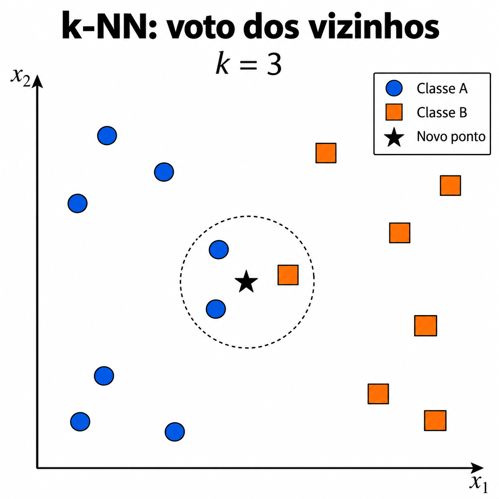
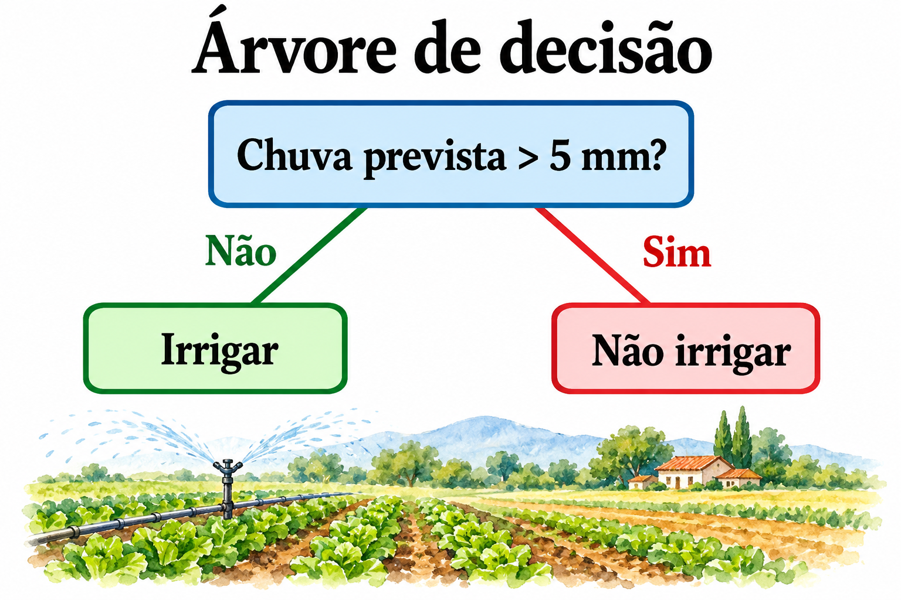
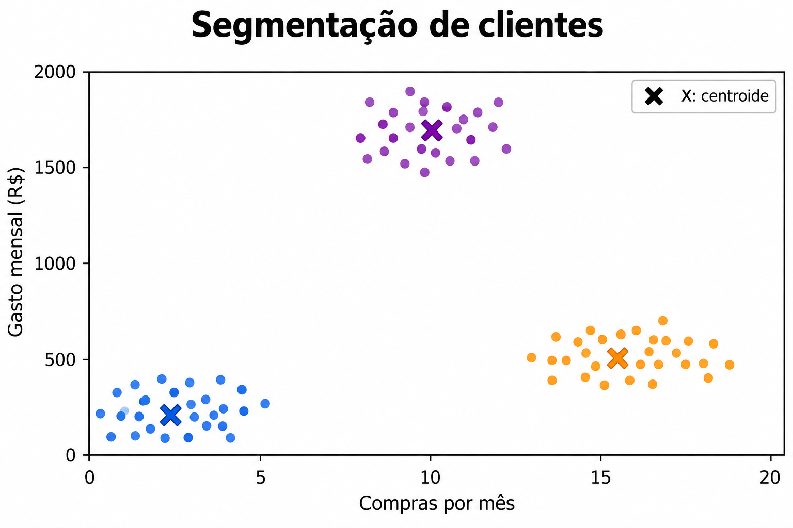
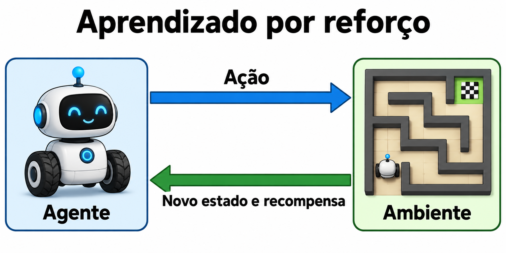

Machine learning::01 Fundamentos e tipos de aprendizadoO que significa um modelo aprender com dados?Mostrar respostaAjustar uma regra a partir de exemplos para realizar uma tarefa. O desempenho precisa ser avaliado em dados que não participaram do ajuste.Fonte: Referência técnica. Exemplo autoral quando aplicável.
Machine learning::01 Fundamentos e tipos de aprendizadoO que é uma amostra em machine learning?Mostrar respostaUma observação, como um imóvel, uma imagem ou uma medição em determinado instante. A unidade da amostra define como separar treino e teste.Fonte: Referência técnica. Exemplo autoral quando aplicável.
Machine learning::01 Fundamentos e tipos de aprendizadoO que são features ou variáveis de entrada?Mostrar respostaInformações que o modelo recebe para prever ou organizar dados. Para um imóvel, podem ser área e número de quartos.Fonte: Referência técnica. Exemplo autoral quando aplicável.
Machine learning::01 Fundamentos e tipos de aprendizadoO que é o alvo y no aprendizado supervisionado?Mostrar respostaO resultado conhecido usado para ensinar o modelo, como preço ou classe. Ele não deve aparecer entre as entradas da própria previsão.Fonte: Referência técnica. Exemplo autoral quando aplicável.
Machine learning::01 Fundamentos e tipos de aprendizadoComo funciona o aprendizado supervisionado?Mostrar respostaO modelo recebe entradas X e alvos y conhecidos, ajusta seus parâmetros e depois prevê y para novas entradas.Fonte: Referência técnica. Exemplo autoral quando aplicável.
Machine learning::01 Fundamentos e tipos de aprendizadoComo distinguir classificação de regressão pelo alvo?Mostrar respostaClassificação prevê categorias, como spam ou normal. Regressão prevê valores numéricos, como temperatura.Fonte: Referência técnica. Exemplo autoral quando aplicável.
Machine learning::01 Fundamentos e tipos de aprendizadoComo funciona o aprendizado não supervisionado?Mostrar respostaBusca estrutura nas entradas sem receber um alvo de referência para cada amostra. Agrupamento e redução de dimensionalidade são exemplos.Fonte: Referência técnica. Exemplo autoral quando aplicável.
Machine learning::01 Fundamentos e tipos de aprendizadoO que é aprendizado semissupervisionado?Mostrar respostaCombina poucas amostras rotuladas com muitas sem rótulo. Os rótulos inferidos podem estar errados e precisam de avaliação independente.Fonte: Referência técnica. Exemplo autoral quando aplicável.
Machine learning::01 Fundamentos e tipos de aprendizadoO que é aprendizado autossupervisionado?Mostrar respostaConstrói uma tarefa a partir dos próprios dados, como prever partes ocultadas de um texto. Essa tarefa fornece o sinal de treinamento.Fonte: Referência técnica. Exemplo autoral quando aplicável.
Machine learning::01 Fundamentos e tipos de aprendizadoQual é a ideia central do aprendizado por reforço?Mostrar respostaUm agente escolhe ações, recebe recompensas e aprende uma política para melhorar o retorno ao longo das interações.Fonte: Referência técnica. Exemplo autoral quando aplicável.
Machine learning::01 Fundamentos e tipos de aprendizadoDeep learning é um tipo separado de supervisionado e não supervisionado?Mostrar respostaNão. Usa redes neurais com várias camadas e pode participar de tarefas supervisionadas, autossupervisionadas ou de reforço.Fonte: Referência técnica. Exemplo autoral quando aplicável.
Machine learning::01 Fundamentos e tipos de aprendizadoComo distinguir parâmetro de hiperparâmetro?Mostrar respostaParâmetro é aprendido, como um coeficiente. Hiperparâmetro configura o aprendizado, como profundidade máxima ou taxa de aprendizado.Fonte: Referência técnica. Exemplo autoral quando aplicável.
Machine learning::01 Fundamentos e tipos de aprendizadoQual é a diferença entre treinamento e inferência?Mostrar respostaTreinamento ajusta parâmetros com exemplos. Inferência aplica o modelo ajustado a novas entradas.Fonte: Referência técnica. Exemplo autoral quando aplicável.
Machine learning::01 Fundamentos e tipos de aprendizadoO que significa generalização?Mostrar respostaManter desempenho útil em observações novas que representem o uso esperado. Um bom resultado no treino não comprova generalização.Fonte: Referência técnica. Exemplo autoral quando aplicável.
Machine learning::01 Fundamentos e tipos de aprendizadoPrever chuva amanhã com medições de hoje é que tipo de tarefa?Mostrar respostaSe o alvo for chuva em milímetros, regressão. Se for chover ou não chover, classificação.Fonte: Referência técnica. Exemplo autoral quando aplicável.
Machine learning::02 Preparação de dados e pipelinesPor que separar treino e teste antes de preparar os dados?Mostrar respostaEstatísticas calculadas com o teste podem influenciar o modelo e produzir uma avaliação otimista.Fonte: Referência técnica. Exemplo autoral quando aplicável.
Machine learning::02 Preparação de dados e pipelinesComo preencher valores numéricos ausentes sem vazar informação?Mostrar respostaAjustar o preenchimento, por exemplo a mediana, apenas no treino. Aplicar essa mesma regra à validação e ao teste.Fonte: Referência técnica. Exemplo autoral quando aplicável.
Machine learning::02 Preparação de dados e pipelinesO que o StandardScaler faz?Mostrar respostaCalcula z = (x - média do treino) / desvio do treino para cada variável. Centra e escala, mas não transforma uma distribuição em normal.Fonte: Referência técnica. Exemplo autoral quando aplicável.
Machine learning::02 Preparação de dados e pipelinesQuando padronizar costuma ser relevante?Mostrar respostaEm métodos que dependem de distância, penalização ou gradiente, como k-NN, SVM e redes neurais.Fonte: Referência técnica. Exemplo autoral quando aplicável.
Machine learning::02 Preparação de dados e pipelinesQual é a diferença entre StandardScaler e MinMaxScaler?Mostrar respostaStandardScaler usa média e desvio. MinMaxScaler usa mínimo e máximo do treino; novos valores podem cair fora do intervalo configurado.Fonte: Referência técnica. Exemplo autoral quando aplicável.
Machine learning::02 Preparação de dados e pipelinesComo representar uma categoria sem ordem, como cidade?Mostrar respostaOne-hot encoding cria indicadores por categoria. Atribuir números arbitrários pode inventar uma ordem ou distância.Fonte: Referência técnica. Exemplo autoral quando aplicável.
Machine learning::02 Preparação de dados e pipelinesQuando uma codificação ordinal faz sentido?Mostrar respostaQuando existe uma ordem real, como baixo, médio e alto. O modelo ainda pode interpretar diferenças numéricas como distâncias.Fonte: Referência técnica. Exemplo autoral quando aplicável.
Machine learning::02 Preparação de dados e pipelinesPara que serve handle_unknown='ignore' no OneHotEncoder?Mostrar respostaPermite transformar categorias não vistas no ajuste. Elas recebem zeros no bloco correspondente; isso não garante boa previsão para elas.Fonte: Referência técnica. Exemplo autoral quando aplicável.
Machine learning::02 Preparação de dados e pipelinesO que um Pipeline organiza no scikit-learn?Mostrar respostaEncadeia transformações e estimador. Na validação cruzada, ajusta as transformações dentro de cada treino quando o pipeline é o objeto avaliado.Fonte: Referência técnica. Exemplo autoral quando aplicável.
Machine learning::02 Preparação de dados e pipelinesPara que serve ColumnTransformer?Mostrar respostaAplica tratamentos diferentes a grupos de colunas, como escala nas numéricas e one-hot nas categóricas.Fonte: Referência técnica. Exemplo autoral quando aplicável.
Machine learning::02 Preparação de dados e pipelinesQual é o risco de usar informação coletada depois do evento previsto?Mostrar respostaEla não estará disponível na inferência e pode revelar o alvo. Exemplo: usar o motivo de cancelamento para prever quem vai cancelar.Fonte: Referência técnica. Exemplo autoral quando aplicável.
Machine learning::02 Preparação de dados e pipelinesComo definir uma feature de média móvel para prever o próximo dia?Mostrar respostaUsar apenas observações disponíveis até o instante da previsão. Excluir valores do futuro e respeitar o atraso de publicação dos dados.Fonte: Referência técnica. Exemplo autoral quando aplicável.
Machine learning::02 Preparação de dados e pipelinesUma renda tem média 3000 e desvio 1000 no treino. Qual é o z de 5000?Mostrar respostaz = (5000 - 3000) / 1000 = 2. Esse valor está dois desvios acima da média do treino.Fonte: Referência técnica. Exemplo autoral quando aplicável.
Machine learning::02 Preparação de dados e pipelinesComo escolher o tratamento de um outlier?Mostrar respostaInvestigar se é erro ou evento real. Corrigir erro comprovado; para evento real, considerar transformação ou método robusto sem apagar casos por conveniência.Fonte: Referência técnica. Exemplo autoral quando aplicável.
Machine learning::02 Preparação de dados e pipelinesPor que a engenharia de features também entra na validação?Mostrar respostaSe uma transformação aprende com os dados ou é escolhida pelo desempenho, ela faz parte do processo de seleção e pode superajustar.Fonte: Referência técnica. Exemplo autoral quando aplicável.
Machine learning::03 Validação e métricasQual é o papel de treino, validação e teste?Mostrar respostaTreino ajusta parâmetros. Validação orienta escolhas. Teste mede o procedimento final em dados reservados.Fonte: Referência técnica. Exemplo autoral quando aplicável.
Machine learning::03 Validação e métricasO que é uma baseline?Mostrar respostaUm método simples de referência. Pode prever a média para regressão ou a classe mais frequente para classificação.Fonte: Referência técnica. Exemplo autoral quando aplicável.
Machine learning::03 Validação e métricasQuando uma divisão aleatória de treino e teste é inadequada?Mostrar respostaQuando há tempo, grupos ou dependência espacial relevantes. Dados relacionados em lados diferentes podem tornar a avaliação otimista.Fonte: Referência técnica. Exemplo autoral quando aplicável.
Machine learning::03 Validação e métricasComo validar uma previsão temporal?Mostrar respostaTreinar em períodos anteriores e validar em posteriores. Considerar uma lacuna entre períodos quando janelas ou atrasos geram sobreposição.Fonte: Referência técnica. Exemplo autoral quando aplicável.
Machine learning::03 Validação e métricasQuando usar GroupKFold?Mostrar respostaQuando observações da mesma entidade, como paciente ou estação, precisam ficar no mesmo lado da divisão.Fonte: Referência técnica. Exemplo autoral quando aplicável.
Machine learning::03 Validação e métricasO que a validação cruzada estratificada preserva aproximadamente?Mostrar respostaA proporção de classes em cada fold. Isso não resolve dependência entre pessoas, locais ou instantes.Fonte: Referência técnica. Exemplo autoral quando aplicável.
Machine learning::03 Validação e métricasO que significa overfitting?Mostrar respostaAprender particularidades do treino que não se repetem fora dele. Uma diferença grande entre desempenho de treino e validação é um sinal possível.Fonte: Referência técnica. Exemplo autoral quando aplicável.
Machine learning::03 Validação e métricasO que significa underfitting?Mostrar respostaO modelo não representa relações relevantes e vai mal até no treino. Pode faltar capacidade, informação ou um ajuste adequado.Fonte: Referência técnica. Exemplo autoral quando aplicável.
Machine learning::03 Validação e métricasComo calcular MAE?Mostrar respostaCalcular a média de abs(y - previsão). Sua unidade é a mesma do alvo.Fonte: Referência técnica. Exemplo autoral quando aplicável.
Machine learning::03 Validação e métricasPor que RMSE penaliza erros grandes mais que MAE?Mostrar respostaEleva os erros ao quadrado antes de tirar a média e a raiz. Erros grandes ganham peso maior.Fonte: Referência técnica. Exemplo autoral quando aplicável.
Machine learning::03 Validação e métricasO que significa R² negativo no conjunto de avaliação?Mostrar respostaO erro quadrático supera o de prever a média dos alvos desse conjunto. R² não é uma porcentagem de acertos.Fonte: Referência técnica. Exemplo autoral quando aplicável.
Machine learning::03 Validação e métricasQual é a diferença entre precision e recall?Mostrar respostaPrecision = TP / (TP + FP). Recall = TP / (TP + FN). A primeira avalia os positivos previstos; a segunda, os positivos reais.Fonte: Referência técnica. Exemplo autoral quando aplicável.
Machine learning::03 Validação e métricasQual é a fórmula de F1?Mostrar respostaF1 = 2TP/(2TP+FP+FN), quando esse denominador é positivo. Equivale à média harmônica de precision e recall quando ambas permitem essa expressão. Se TP=FP=FN=0, declarar a convenção adotada.Fonte: Referência técnica. Exemplo autoral quando aplicável.
Machine learning::03 Validação e métricasEm 1000 casos, só 10 são positivos. Prever sempre negativo dá qual acurácia e recall?Mostrar respostaAcurácia = 990 / 1000 = 99%. Recall positivo = 0 / 10 = 0. A acurácia esconde a falha de detecção.Fonte: Referência técnica. Exemplo autoral quando aplicável.
Machine learning::03 Validação e métricasUm detector tem TP=8, FP=2 e FN=4. Calcule precision e recall.Mostrar respostaPrecision = 8 / 10 = 0,80. Recall = 8 / 12 ≈ 0,667.Fonte: Referência técnica. Exemplo autoral quando aplicável.
Machine learning::03 Validação e métricasObservados [10, 20] e previstos [12, 17]. Qual é o MAE?Mostrar respostaErros absolutos 2 e 3. MAE = (2 + 3) / 2 = 2,5.Fonte: Referência técnica. Exemplo autoral quando aplicável.
Machine learning::03 Validação e métricasPara que serve ajustar o limiar de classificação?Mostrar respostaControlar a decisão feita a partir de um escore ou probabilidade. Escolher o limiar na validação conforme o custo dos erros.Fonte: Referência técnica. Exemplo autoral quando aplicável.
Machine learning::03 Validação e métricasO que mede uma curva precision-recall?Mostrar respostaA relação entre precision e recall ao variar o limiar. É útil para examinar a detecção da classe positiva, especialmente quando ela é rara.Fonte: Referência técnica. Exemplo autoral quando aplicável.
Machine learning::04 Regressões e regularizaçãoQual é a forma da regressão linear com duas entradas?Mostrar respostaŷ = b + w1 × x1 + w2 × x2. O treinamento estima o intercepto b e os coeficientes w.Fonte: Referência técnica. Exemplo autoral quando aplicável.
Machine learning::04 Regressões e regularizaçãoO que mínimos quadrados minimiza?Mostrar respostaA soma dos resíduos ao quadrado entre valores observados e previstos.Fonte: Referência técnica. Exemplo autoral quando aplicável.
Machine learning::04 Regressões e regularizaçãoNa equação preço = 50000 + 2000 × área, quanto vale a previsão para 60 m²?Mostrar resposta50000 + 2000 × 60 = 170000. É uma previsão do exemplo, sem intervalo de incerteza.Fonte: Referência técnica. Exemplo autoral quando aplicável.
Machine learning::04 Regressões e regularizaçãoO que um coeficiente linear descreve?Mostrar respostaA variação prevista do alvo por unidade da entrada, mantendo as outras entradas fixas. Isso não demonstra efeito causal.Fonte: Referência técnica. Exemplo autoral quando aplicável.
Machine learning::04 Regressões e regularizaçãoO que Ridge acrescenta à regressão?Mostrar respostaUma penalização L2 nos coeficientes, que reduz sua magnitude e pode estabilizar estimativas com entradas correlacionadas.Fonte: Referência técnica. Exemplo autoral quando aplicável.
Machine learning::04 Regressões e regularizaçãoComo alpha afeta Ridge?Mostrar respostaUm alpha maior aumenta a penalização. Escolher seu valor pela validação e padronizar entradas quando escalas são diferentes.Fonte: Referência técnica. Exemplo autoral quando aplicável.
Machine learning::04 Regressões e regularizaçãoQual é a ideia do Lasso?Mostrar respostaUsa penalização L1, que pode levar alguns coeficientes exatamente a zero e gerar um modelo esparso.Fonte: Referência técnica. Exemplo autoral quando aplicável.
Machine learning::04 Regressões e regularizaçãoQuando considerar Elastic Net?Mostrar respostaQuando se quer combinar penalizações L1 e L2, por exemplo com muitas entradas correlacionadas.Fonte: Referência técnica. Exemplo autoral quando aplicável.
Machine learning::04 Regressões e regularizaçãoQual é o papel de l1_ratio no ElasticNet?Mostrar respostaControla a mistura das penalizações. l1_ratio=1 corresponde a L1; valores entre 0 e 1 combinam L1 e L2.Fonte: Referência técnica. Exemplo autoral quando aplicável.
Machine learning::04 Regressões e regularizaçãoRegressão polinomial deixa de ser linear nos parâmetros?Mostrar respostaNão. Termos como x² são novas features, mas os coeficientes continuam entrando linearmente no modelo.Fonte: Referência técnica. Exemplo autoral quando aplicável.
Machine learning::04 Regressões e regularizaçãoQual é o risco de aumentar muito o grau polinomial?Mostrar respostaCriar uma função flexível demais para a quantidade e o ruído dos dados, com pior generalização.Fonte: Referência técnica. Exemplo autoral quando aplicável.
Machine learning::04 Regressões e regularizaçãoPor que regressão logística é usada para classificação?Mostrar respostaTransforma um escore linear em probabilidade de classe. No caso binário, usa a função sigmoide.Fonte: Referência técnica. Exemplo autoral quando aplicável.
Machine learning::04 Regressões e regularizaçãoUma regressão logística produz p=0,7. Com limiar 0,8, qual classe prevê?Mostrar respostaA negativa, se a regra for prever positiva quando p ≥ 0,8. A probabilidade permanece 0,7.Fonte: Referência técnica. Exemplo autoral quando aplicável.
Machine learning::04 Regressões e regularizaçãoComo C controla a regularização em regressão logística?Mostrar respostaC é o inverso da força de regularização. Menor C costuma significar penalização mais forte.Fonte: Referência técnica. Exemplo autoral quando aplicável.
Machine learning::04 Regressões e regularizaçãoO que verificar antes de interpretar coeficientes regularizados?Mostrar respostaEscala das variáveis, codificação e correlação entre entradas. Magnitudes sem esse contexto podem induzir conclusões erradas.Fonte: Referência técnica. Exemplo autoral quando aplicável.
Machine learning::05 Vizinhos SVM e Naive BayesComo k-NN faz uma classificação?Mostrar respostaLocaliza os k exemplos mais próximos e agrega seus rótulos por votação, eventualmente ponderada pela distância.Fonte: Referência técnica. Exemplo autoral quando aplicável.
Machine learning::05 Vizinhos SVM e Naive BayesComo k-NN faz regressão?Mostrar respostaAgrega os alvos numéricos dos vizinhos, em geral por média simples ou ponderada.Fonte: Referência técnica. Exemplo autoral quando aplicável.
Machine learning::05 Vizinhos SVM e Naive BayesComo configurar o número de vizinhos no scikit-learn?Mostrar respostaUsar n_neighbors. Comparar valores na validação com a escala e a distância definidas no pipeline.Fonte: Referência técnica. Exemplo autoral quando aplicável.
Machine learning::05 Vizinhos SVM e Naive BayesO que costuma acontecer com k muito pequeno no k-NN?Mostrar respostaA previsão fica sensível ao ruído local. Aumentar k suaviza, mas um valor muito alto pode apagar diferenças relevantes.Fonte: Referência técnica. Exemplo autoral quando aplicável.
Machine learning::05 Vizinhos SVM e Naive BayesPara que serve weights='distance' no k-NN?Mostrar respostaDá maior peso aos vizinhos mais próximos em vez de usar pesos iguais.Fonte: Referência técnica. Exemplo autoral quando aplicável.
Machine learning::05 Vizinhos SVM e Naive BayesNa figura de k-NN, qual classe o novo ponto recebe com voto uniforme?Mostrar respostaClasse A. Entre os três vizinhos dentro do círculo, dois pertencem a A e um a B.Fonte: Referência técnica. Exemplo autoral quando aplicável.
Machine learning::05 Vizinhos SVM e Naive BayesPor que distância perde utilidade com muitas features irrelevantes?Mostrar respostaDimensões sem sinal podem dominar a distância e reduzir o contraste entre vizinhos. Seleção de features e representação devem ser avaliadas.Fonte: Referência técnica. Exemplo autoral quando aplicável.
Machine learning::05 Vizinhos SVM e Naive BayesQual é a ideia de uma SVM de classificação?Mostrar respostaBuscar uma fronteira com margem ampla, equilibrando margem e penalização de violações.Fonte: Referência técnica. Exemplo autoral quando aplicável.
Machine learning::05 Vizinhos SVM e Naive BayesComo o kernel ajuda uma SVM?Mostrar respostaDefine semelhanças equivalentes a uma representação em outro espaço, permitindo fronteiras não lineares sem construir todas as features explicitamente.Fonte: Referência técnica. Exemplo autoral quando aplicável.
Machine learning::05 Vizinhos SVM e Naive BayesQual é o efeito de C em uma SVM?Mostrar respostaMaior C penaliza mais as violações no treino. Menor C permite mais violações em troca de regularização maior.Fonte: Referência técnica. Exemplo autoral quando aplicável.
Machine learning::05 Vizinhos SVM e Naive BayesO que gamma controla no kernel RBF?Mostrar respostaO alcance da influência dos exemplos. Gamma alto produz influência mais local e pode gerar fronteiras muito complexas.Fonte: Referência técnica. Exemplo autoral quando aplicável.
Machine learning::05 Vizinhos SVM e Naive BayesQual é uma configuração inicial ilustrativa para SVM RBF?Mostrar respostaStandardScaler seguido de SVC(kernel='rbf', C=1, gamma='scale'). Os valores são ponto de partida, não uma configuração ótima.Fonte: Referência técnica. Exemplo autoral quando aplicável.
Machine learning::05 Vizinhos SVM e Naive BayesQual é a hipótese simplificadora do Naive Bayes?Mostrar respostaAs features são condicionalmente independentes dado o rótulo. Essa hipótese pode ser aproximada e ainda produzir um classificador útil.Fonte: Referência técnica. Exemplo autoral quando aplicável.
Machine learning::05 Vizinhos SVM e Naive BayesQuando considerar MultinomialNB em vez de GaussianNB?Mostrar respostaPara contagens ou representações textuais não negativas. GaussianNB modela cada feature contínua com uma distribuição normal por classe.Fonte: Referência técnica. Exemplo autoral quando aplicável.
Machine learning::05 Vizinhos SVM e Naive BayesPara que serve alpha no MultinomialNB?Mostrar respostaSuaviza as estimativas para evitar probabilidades nulas para eventos pouco observados.Fonte: Referência técnica. Exemplo autoral quando aplicável.
Machine learning::06 Árvores florestas e boostingComo uma árvore de decisão prevê?Mostrar respostaAplica testes sucessivos às entradas até alcançar uma folha. A folha define uma classe ou um valor numérico.Fonte: Referência técnica. Exemplo autoral quando aplicável.
Machine learning::06 Árvores florestas e boostingNa árvore ilustrada, com previsão de chuva de 8 mm, qual folha é alcançada?Mostrar respostaNão irrigar, pois 8 > 5. A figura representa uma regra fictícia para estudar árvores, não uma recomendação agronômica.Fonte: Referência técnica. Exemplo autoral quando aplicável.
Machine learning::06 Árvores florestas e boostingComo max_depth controla uma árvore?Mostrar respostaLimita a quantidade de níveis de divisão. Uma árvore menos profunda tende a ser mais simples.Fonte: Referência técnica. Exemplo autoral quando aplicável.
Machine learning::06 Árvores florestas e boostingO que min_samples_leaf restringe?Mostrar respostaO número mínimo de exemplos em cada folha. Aumentá-lo evita folhas sustentadas por poucos casos.Fonte: Referência técnica. Exemplo autoral quando aplicável.
Machine learning::06 Árvores florestas e boostingO que ccp_alpha controla em uma árvore?Mostrar respostaA intensidade da poda por custo-complexidade. Valores maiores favorecem árvores menores.Fonte: Referência técnica. Exemplo autoral quando aplicável.
Machine learning::06 Árvores florestas e boostingÁrvores exigem StandardScaler para calcular suas divisões?Mostrar respostaEm geral, não. Divisões por limiar não dependem da comparação direta entre escalas de features diferentes.Fonte: Referência técnica. Exemplo autoral quando aplicável.
Machine learning::06 Árvores florestas e boostingQual é a ideia do bagging?Mostrar respostaTreinar modelos em amostras reamostradas e combinar previsões, reduzindo variância quando os erros não são idênticos.Fonte: Referência técnica. Exemplo autoral quando aplicável.
Machine learning::06 Árvores florestas e boostingO que distingue Random Forest de uma única árvore?Mostrar respostaCombina várias árvores com aleatoriedade nas amostras e nas features consideradas nas divisões.Fonte: Referência técnica. Exemplo autoral quando aplicável.
Machine learning::06 Árvores florestas e boostingO que n_estimators controla em Random Forest?Mostrar respostaA quantidade de árvores. Mais árvores podem estabilizar a agregação, com custo maior de treinamento e inferência.Fonte: Referência técnica. Exemplo autoral quando aplicável.
Machine learning::06 Árvores florestas e boostingO que max_features controla em Random Forest?Mostrar respostaQuantas features são candidatas em cada divisão. Mudar esse valor altera a diversidade e a força das árvores.Fonte: Referência técnica. Exemplo autoral quando aplicável.
Machine learning::06 Árvores florestas e boostingO que é avaliação out-of-bag em uma floresta com bootstrap?Mostrar respostaAvaliar cada amostra usando árvores que não a receberam no sorteio. Isso não substitui automaticamente um teste temporal ou por grupos.Fonte: Referência técnica. Exemplo autoral quando aplicável.
Machine learning::06 Árvores florestas e boostingComo gradient boosting constrói um conjunto de modelos?Mostrar respostaAdiciona modelos sequencialmente para melhorar a função de perda do conjunto, usando a direção dada pelo gradiente negativo.Fonte: Referência técnica. Exemplo autoral quando aplicável.
Machine learning::06 Árvores florestas e boostingComo combinar learning_rate e número de etapas no boosting?Mostrar respostaTaxa menor reduz a contribuição de cada etapa e costuma exigir mais etapas. Comparar a combinação na validação.Fonte: Referência técnica. Exemplo autoral quando aplicável.
Machine learning::06 Árvores florestas e boostingQual é o papel de early stopping no boosting?Mostrar respostaInterromper novas etapas quando um critério de validação deixa de melhorar. A divisão usada precisa representar a tarefa.Fonte: Referência técnica. Exemplo autoral quando aplicável.
Machine learning::06 Árvores florestas e boostingQual é a diferença entre voting e stacking?Mostrar respostaVoting agrega diretamente previsões. Stacking treina um segundo modelo para combiná-las, usando previsões fora do treino de cada modelo base.Fonte: Referência técnica. Exemplo autoral quando aplicável.
Machine learning::06 Árvores florestas e boostingXGBoost LightGBM e CatBoost são o mesmo algoritmo?Mostrar respostaNão. São bibliotecas com implementações e recursos próprios de boosting de árvores. Comparar suporte a dados, custo e validação antes de escolher.Fonte: Referência técnica. Exemplo autoral quando aplicável.
Machine learning::07 Agrupamento redução e anomaliasQual é a diferença entre k-NN e k-means?Mostrar respostak-NN usa vizinhos para prever com exemplos rotulados. K-means agrupa pontos sem rótulos e aprende k centroides.Fonte: Referência técnica. Exemplo autoral quando aplicável.
Machine learning::07 Agrupamento redução e anomaliasComo k-means atualiza seus grupos?Mostrar respostaAlterna entre atribuir pontos ao centroide mais próximo e recalcular cada centroide como a média dos pontos atribuídos.Fonte: Referência técnica. Exemplo autoral quando aplicável.
Machine learning::07 Agrupamento redução e anomaliasO que n_clusters configura em KMeans?Mostrar respostaA quantidade de grupos a procurar. Ela deve ser escolhida considerando validação do agrupamento e utilidade para o problema.Fonte: Referência técnica. Exemplo autoral quando aplicável.
Machine learning::07 Agrupamento redução e anomaliasPara que serve n_init em KMeans?Mostrar respostaExecuta múltiplas inicializações e retém a solução com menor inércia. Exemplo inicial: n_clusters=3, n_init=10, random_state=42.Fonte: Referência técnica. Exemplo autoral quando aplicável.
Machine learning::07 Agrupamento redução e anomaliasO que a inércia mede no k-means?Mostrar respostaA soma das distâncias quadráticas dos pontos aos seus centroides. Ela tende a diminuir com mais grupos e não basta para escolher k.Fonte: Referência técnica. Exemplo autoral quando aplicável.
Machine learning::07 Agrupamento redução e anomaliasPor que padronizar gasto e frequência antes de k-means?Mostrar respostaSem ajuste de escala, valores em reais podem dominar distâncias sobre valores de contagem. A escala deve refletir o significado da tarefa.Fonte: Referência técnica. Exemplo autoral quando aplicável.
Machine learning::07 Agrupamento redução e anomaliasNa figura dos clientes, que perfil tem o grupo roxo?Mostrar respostaGasto mensal alto e frequência de compras intermediária. Esse agrupamento ilustrativo não prova preferência, renda ou motivo de compra.Fonte: Referência técnica. Exemplo autoral quando aplicável.
Machine learning::07 Agrupamento redução e anomaliasQue limitação de k-means aparece em grupos curvos ou com densidades distintas?Mostrar respostaA distância aos centroides favorece grupos compactos. Formas alongadas ou densidades muito diferentes podem ser mal representadas.Fonte: Referência técnica. Exemplo autoral quando aplicável.
Machine learning::07 Agrupamento redução e anomaliasComo DBSCAN identifica grupos?Mostrar respostaConecta regiões densas por vizinhança e marca pontos sem suporte suficiente como ruído.Fonte: Referência técnica. Exemplo autoral quando aplicável.
Machine learning::07 Agrupamento redução e anomaliasO que eps e min_samples controlam no DBSCAN?Mostrar respostaeps define o raio da vizinhança. min_samples define o suporte necessário para um ponto central, incluindo o próprio ponto no scikit-learn.Fonte: Referência técnica. Exemplo autoral quando aplicável.
Machine learning::07 Agrupamento redução e anomaliasComo funciona agrupamento hierárquico aglomerativo?Mostrar respostaComeça com grupos pequenos e une os mais próximos conforme um critério de ligação, construindo uma hierarquia.Fonte: Referência técnica. Exemplo autoral quando aplicável.
Machine learning::07 Agrupamento redução e anomaliasQual é a ideia de PCA?Mostrar respostaEncontrar direções ortogonais de maior variância e projetar os dados nelas. As componentes são combinações lineares das features.Fonte: Referência técnica. Exemplo autoral quando aplicável.
Machine learning::07 Agrupamento redução e anomaliasPCA seleciona diretamente algumas colunas originais?Mostrar respostaNão. Cria componentes a partir de combinações das colunas. Seleção de features mantém um subconjunto das entradas originais.Fonte: Referência técnica. Exemplo autoral quando aplicável.
Machine learning::07 Agrupamento redução e anomaliasComo n_components=0.95 configura PCA?Mostrar respostaRetém componentes suficientes para atingir pelo menos 95% da variância explicada, em uma configuração de solver compatível.Fonte: Referência técnica. Exemplo autoral quando aplicável.
Machine learning::07 Agrupamento redução e anomaliasPor que um mapa t-SNE ou UMAP não comprova classes separadas?Mostrar respostaA projeção pode distorcer relações e muda com a configuração. Distâncias e espaços entre grupos precisam de interpretação cuidadosa.Fonte: Referência técnica. Exemplo autoral quando aplicável.
Machine learning::07 Agrupamento redução e anomaliasQual é a ideia do Isolation Forest?Mostrar respostaIsolar observações por divisões aleatórias. Observações que exigem caminhos mais curtos tendem a ser consideradas mais anômalas.Fonte: Referência técnica. Exemplo autoral quando aplicável.
Machine learning::08 Ajuste de hiperparâmetros e seleçãoComo GridSearchCV escolhe uma configuração?Mostrar respostaAvalia todas as combinações da grade por validação cruzada e seleciona a melhor segundo a métrica definida.Fonte: Referência técnica. Exemplo autoral quando aplicável.
Machine learning::08 Ajuste de hiperparâmetros e seleçãoComo RandomizedSearchCV difere de GridSearchCV?Mostrar respostaAmostra um número definido de configurações de distribuições ou listas. Permite limitar o custo sem testar toda a grade.Fonte: Referência técnica. Exemplo autoral quando aplicável.
Machine learning::08 Ajuste de hiperparâmetros e seleçãoComo nomear um hiperparâmetro de etapa em um Pipeline?Mostrar respostaUsar nome_da_etapa__parametro. Exemplo: modelo__max_depth para uma etapa chamada modelo.Fonte: Referência técnica. Exemplo autoral quando aplicável.
Machine learning::08 Ajuste de hiperparâmetros e seleçãoPor que usar uma grade logarítmica para C ou alpha?Mostrar respostaOrdens de magnitude podem importar mais que pequenos incrementos. Exemplo ilustrativo: [0.01, 0.1, 1, 10, 100].Fonte: Referência técnica. Exemplo autoral quando aplicável.
Machine learning::08 Ajuste de hiperparâmetros e seleçãoUma grade tem 3 valores de C e 4 de gamma com 5 folds. Quantos ajustes de validação são feitos?Mostrar resposta3 × 4 × 5 = 60. Se refit=True, há também um ajuste final da melhor configuração no conjunto de desenvolvimento.Fonte: Referência técnica. Exemplo autoral quando aplicável.
Machine learning::08 Ajuste de hiperparâmetros e seleçãoPor que o scikit-learn usa neg_mean_absolute_error na busca?Mostrar respostaOs escores seguem a convenção de que maior é melhor. O MAE é negado; -2 é melhor que -5.Fonte: Referência técnica. Exemplo autoral quando aplicável.
Machine learning::08 Ajuste de hiperparâmetros e seleçãoComo usar a métrica certa em uma busca de hiperparâmetros?Mostrar respostaEscolher scoring conforme a tarefa. Para classes raras, avaliar a classe positiva e o custo dos erros; para regressão, usar unidade e objetivo do alvo.Fonte: Referência técnica. Exemplo autoral quando aplicável.
Machine learning::08 Ajuste de hiperparâmetros e seleçãoO que é validação cruzada aninhada?Mostrar respostaUm ciclo interno escolhe configurações; um externo avalia o procedimento de seleção em dados que o ciclo interno não viu.Fonte: Referência técnica. Exemplo autoral quando aplicável.
Machine learning::08 Ajuste de hiperparâmetros e seleçãoPor que escolher features antes de todos os folds pode vazar informação?Mostrar respostaA seleção já consultou dados que serão tratados como validação. Seleção aprendida deve ocorrer dentro de cada treino.Fonte: Referência técnica. Exemplo autoral quando aplicável.
Machine learning::08 Ajuste de hiperparâmetros e seleçãoO que uma curva de aprendizado compara?Mostrar respostaDesempenho de treino e validação para diferentes tamanhos de treino. Ajuda a investigar falta de dados, viés e variância.Fonte: Referência técnica. Exemplo autoral quando aplicável.
Machine learning::08 Ajuste de hiperparâmetros e seleçãoUma curva tem treino muito bom e validação ruim. O que investigar?Mostrar respostaComplexidade excessiva, vazamento, desvio entre conjuntos e representatividade dos dados. O padrão sozinho não identifica uma causa única.Fonte: Referência técnica. Exemplo autoral quando aplicável.
Machine learning::08 Ajuste de hiperparâmetros e seleçãoPor que repetir buscas olhando sempre o mesmo teste é um problema?Mostrar respostaAs escolhas passam a se adaptar ao teste. Ele deixa de representar uma avaliação independente do procedimento final.Fonte: Referência técnica. Exemplo autoral quando aplicável.
Machine learning::08 Ajuste de hiperparâmetros e seleçãoO que random_state resolve e o que não resolve?Mostrar respostaControla fontes específicas de aleatoriedade. Não garante igualdade entre versões, hardware, bibliotecas ou todos os algoritmos.Fonte: Referência técnica. Exemplo autoral quando aplicável.
Machine learning::08 Ajuste de hiperparâmetros e seleçãoComo aplicar early stopping sem consultar o teste?Mostrar respostaReservar uma validação dentro do desenvolvimento ou usar um procedimento de validação adequado. Manter o teste fora da decisão de parada.Fonte: Referência técnica. Exemplo autoral quando aplicável.
Machine learning::08 Ajuste de hiperparâmetros e seleçãoQual é o papel de um orçamento de busca?Mostrar respostaLimitar configurações, folds e tempo para tornar a comparação viável. Registrar esse orçamento ajuda a comparar procedimentos.Fonte: Referência técnica. Exemplo autoral quando aplicável.
Machine learning::09 Redes neurais e deep learningO que um neurônio artificial calcula?Mostrar respostaUma combinação ponderada das entradas mais um viés, seguida de uma função de ativação.Fonte: Referência técnica. Exemplo autoral quando aplicável.
Machine learning::09 Redes neurais e deep learningPor que usar ativações não lineares entre camadas?Mostrar respostaSem elas, a composição de camadas afins continua equivalente a uma única transformação afim.Fonte: Referência técnica. Exemplo autoral quando aplicável.
Machine learning::09 Redes neurais e deep learningO que uma MLP representa?Mostrar respostaUma rede com camadas densas, em que neurônios recebem combinações das saídas anteriores. Pode resolver classificação ou regressão.Fonte: Referência técnica. Exemplo autoral quando aplicável.
Machine learning::09 Redes neurais e deep learningComo uma rede aprende por backpropagation?Mostrar respostaCalcula gradientes da perda em relação aos parâmetros pela regra da cadeia. Um otimizador usa esses gradientes para atualizar os parâmetros.Fonte: Referência técnica. Exemplo autoral quando aplicável.
Machine learning::09 Redes neurais e deep learningO que learning rate ou taxa de aprendizado controla?Mostrar respostaO tamanho das atualizações feitas pelo otimizador. Taxa muito alta pode desestabilizar; muito baixa pode tornar o aprendizado lento.Fonte: Referência técnica. Exemplo autoral quando aplicável.
Machine learning::09 Redes neurais e deep learningQual é a diferença entre época e batch?Mostrar respostaBatch é um grupo de amostras usado em uma atualização. Época corresponde a uma passagem pelo conjunto de treino.Fonte: Referência técnica. Exemplo autoral quando aplicável.
Machine learning::09 Redes neurais e deep learningHá 1000 amostras e batch de 100. Quantas atualizações por época, sem descarte de amostras?Mostrar resposta1000 / 100 = 10 atualizações. Cada batch participa de uma atualização do otimizador.Fonte: Referência técnica. Exemplo autoral quando aplicável.
Machine learning::09 Redes neurais e deep learningQual é a diferença entre SGD e Adam?Mostrar respostaSGD segue gradientes, podendo usar momentum. Adam ajusta a escala das atualizações com estimativas dos momentos dos gradientes.Fonte: Referência técnica. Exemplo autoral quando aplicável.
Machine learning::09 Redes neurais e deep learningPara que serve dropout?Mostrar respostaDurante o treino, zera aleatoriamente algumas ativações para regularizar. Na inferência usual, não faz esse sorteio.Fonte: Referência técnica. Exemplo autoral quando aplicável.
Machine learning::09 Redes neurais e deep learningO que weight decay procura controlar?Mostrar respostaPenalizar ou reduzir pesos para regularizar o modelo. Sua relação com L2 depende do otimizador e de como a atualização é implementada.Fonte: Referência técnica. Exemplo autoral quando aplicável.
Machine learning::09 Redes neurais e deep learningQual é uma configuração inicial ilustrativa de MLPClassifier?Mostrar respostahidden_layer_sizes=(32, 16), activation='relu', alpha=0.001, learning_rate_init=0.001 e max_iter=500, com padronização e validação.Fonte: Referência técnica. Exemplo autoral quando aplicável.
Machine learning::09 Redes neurais e deep learningPor que CNNs são usadas em imagens?Mostrar respostaFiltros compartilham pesos e exploram relações locais. Isso reduz parâmetros em comparação com ligar todos os pixels a todos os neurônios.Fonte: Referência técnica. Exemplo autoral quando aplicável.
Machine learning::09 Redes neurais e deep learningQue estrutura uma RNN explora?Mostrar respostaUma sequência, usando um estado que se atualiza entre passos. LSTM e GRU ajudam a lidar com dificuldades de memória e gradiente.Fonte: Referência técnica. Exemplo autoral quando aplicável.
Machine learning::09 Redes neurais e deep learningQual é a ideia de atenção em um Transformer?Mostrar respostaCombinar representações dando pesos dependentes do conteúdo a diferentes posições. A arquitetura precisa representar a ordem das posições quando ela importa.Fonte: Referência técnica. Exemplo autoral quando aplicável.
Machine learning::09 Redes neurais e deep learningQual é a diferença entre embedding e one-hot?Mostrar respostaOne-hot indica identidade com um vetor esparso. Embedding representa o item por um vetor denso aprendido, cuja geometria depende do treinamento.Fonte: Referência técnica. Exemplo autoral quando aplicável.
Machine learning::09 Redes neurais e deep learningO que transfer learning reaproveita?Mostrar respostaRepresentações ou pesos de um modelo treinado em outra tarefa. Pode congelar partes ou reajustá-las com novos dados.Fonte: Referência técnica. Exemplo autoral quando aplicável.
Machine learning::09 Redes neurais e deep learningQual é a diferença entre congelar uma camada e fazer fine-tuning?Mostrar respostaCongelar mantém seus pesos fixos. Fine-tuning permite atualizá-los no novo treino, normalmente com taxa de aprendizado cuidadosamente escolhida.Fonte: Referência técnica. Exemplo autoral quando aplicável.
Machine learning::09 Redes neurais e deep learningO que um autoencoder aprende a fazer?Mostrar respostaCodificar uma entrada e reconstruí-la. Uma representação comprimida pode ser útil, mas baixo erro de reconstrução não garante utilidade em outra tarefa.Fonte: Referência técnica. Exemplo autoral quando aplicável.
Machine learning::10 Aprendizado por reforçoNa figura de reforço, o que o agente envia e o que recebe?Mostrar respostaEnvia uma ação ao ambiente. Recebe informação do novo estado e a recompensa.Fonte: Referência técnica. Exemplo autoral quando aplicável.
Machine learning::10 Aprendizado por reforçoO que é estado em aprendizado por reforço?Mostrar respostaUma descrição da situação usada para decidir. A observação disponível ao agente pode ser apenas parte do estado real.Fonte: Referência técnica. Exemplo autoral quando aplicável.
Machine learning::10 Aprendizado por reforçoO que é uma política em aprendizado por reforço?Mostrar respostaUma regra que escolhe ações com base no estado ou observação. Pode ser determinística ou probabilística.Fonte: Referência técnica. Exemplo autoral quando aplicável.
Machine learning::10 Aprendizado por reforçoQual é a diferença entre recompensa e retorno?Mostrar respostaRecompensa é o sinal de um passo. Retorno acumula recompensas ao longo de passos, podendo aplicar desconto.Fonte: Referência técnica. Exemplo autoral quando aplicável.
Machine learning::10 Aprendizado por reforçoO que gamma controla no retorno descontado?Mostrar respostaO peso relativo das recompensas futuras. Gamma próximo de 1 valoriza horizontes mais longos; gamma=0 considera só a recompensa imediata.Fonte: Referência técnica. Exemplo autoral quando aplicável.
Machine learning::10 Aprendizado por reforçoCom recompensas 2 e 4 e gamma=0,5, qual é o retorno de dois passos?Mostrar respostaG = 2 + 0,5 × 4 = 4. O exemplo termina após esses dois passos.Fonte: Referência técnica. Exemplo autoral quando aplicável.
Machine learning::10 Aprendizado por reforçoQual é o conflito entre exploração e aproveitamento?Mostrar respostaExplorar testa ações pouco conhecidas. Aproveitar escolhe ações que já parecem boas. Explorar pouco pode manter uma política ruim.Fonte: Referência técnica. Exemplo autoral quando aplicável.
Machine learning::10 Aprendizado por reforçoComo epsilon-greedy escolhe uma ação?Mostrar respostaCom probabilidade epsilon, explora por uma escolha aleatória. No restante, escolhe uma ação de maior valor estimado.Fonte: Referência técnica. Exemplo autoral quando aplicável.
Machine learning::10 Aprendizado por reforçoO que Q(s,a) representa?Mostrar respostaUma estimativa do retorno esperado ao executar a ação a no estado s e seguir a política considerada depois.Fonte: Referência técnica. Exemplo autoral quando aplicável.
Machine learning::10 Aprendizado por reforçoQual é a atualização do Q-learning tabular em um passo não terminal?Mostrar respostaQ(s,a) ← Q(s,a) + alpha × [r + gamma × max Q(s',a') - Q(s,a)]. No terminal, o termo de valor futuro é zero.Fonte: Referência técnica. Exemplo autoral quando aplicável.
Machine learning::10 Aprendizado por reforçoQ atual é 2, alpha=0,5, r=3, gamma=0,9 e máximo Q futuro=4. Qual é o novo Q?Mostrar respostaAlvo = 3 + 0,9 × 4 = 6,6. Novo Q = 2 + 0,5 × (6,6 - 2) = 4,3.Fonte: Referência técnica. Exemplo autoral quando aplicável.
Machine learning::10 Aprendizado por reforçoComo DQN difere de Q-learning tabular?Mostrar respostaUsa uma rede neural para aproximar valores Q. Replay de experiências e rede alvo ajudam a estabilizar o aprendizado.Fonte: Referência técnica. Exemplo autoral quando aplicável.
Machine learning::10 Aprendizado por reforçoQual é a ideia de policy gradient?Mostrar respostaAjustar diretamente os parâmetros da política para aumentar o retorno esperado estimado a partir de interações.Fonte: Referência técnica. Exemplo autoral quando aplicável.
Machine learning::10 Aprendizado por reforçoQual é a ideia de actor-critic?Mostrar respostaUm actor escolhe ações e um critic estima valores para orientar a atualização da política.Fonte: Referência técnica. Exemplo autoral quando aplicável.
Machine learning::10 Aprendizado por reforçoPor que uma recompensa mal definida pode gerar comportamento ruim?Mostrar respostaO agente pode maximizar o sinal disponível sem cumprir o objetivo real. Recompensa e avaliação precisam incluir o comportamento desejado.Fonte: Referência técnica. Exemplo autoral quando aplicável.
Machine learning::11 Interpretação incerteza e uso do modeloComo funciona importância por permutação?Mostrar respostaEmbaralha uma feature e mede quanto o desempenho piora. O resultado depende do modelo, da métrica e dos dados de avaliação.Fonte: Referência técnica. Exemplo autoral quando aplicável.
Machine learning::11 Interpretação incerteza e uso do modeloPor que features correlacionadas complicam a importância por permutação?Mostrar respostaUma pode substituir informação da outra. Embaralhar apenas uma pode mostrar pouca perda mesmo quando ambas carregam sinal.Fonte: Referência técnica. Exemplo autoral quando aplicável.
Machine learning::11 Interpretação incerteza e uso do modeloImportância de árvore por impureza pode ter qual viés?Mostrar respostaPode favorecer features com muitas divisões possíveis. Conferir também importância fora do treino e o significado das entradas.Fonte: Referência técnica. Exemplo autoral quando aplicável.
Machine learning::11 Interpretação incerteza e uso do modeloO que um valor SHAP procura atribuir?Mostrar respostaUma contribuição de feature para uma previsão em relação a uma referência. A interpretação depende do explicador e das hipóteses sobre os dados.Fonte: Referência técnica. Exemplo autoral quando aplicável.
Machine learning::11 Interpretação incerteza e uso do modeloSHAP ou um coeficiente alto demonstra causalidade?Mostrar respostaNão. Explica aspectos do modelo ou associação. Causalidade exige hipóteses e desenho de análise próprios.Fonte: Referência técnica. Exemplo autoral quando aplicável.
Machine learning::11 Interpretação incerteza e uso do modeloO que é calibração de probabilidades?Mostrar respostaCorrespondência entre probabilidades previstas e frequências observadas. Entre muitos casos previstos com 0,8, espera-se cerca de 80% positivos se houver calibração.Fonte: Referência técnica. Exemplo autoral quando aplicável.
Machine learning::11 Interpretação incerteza e uso do modeloComo calibrar sem contaminar a avaliação?Mostrar respostaAjustar o calibrador com previsões fora do treino do modelo ou com conjunto separado. Reservar dados independentes para avaliar o resultado.Fonte: Referência técnica. Exemplo autoral quando aplicável.
Machine learning::11 Interpretação incerteza e uso do modeloQual é a diferença entre incerteza aleatória e epistêmica?Mostrar respostaAleatória vem da variabilidade do processo ou observação. Epistêmica vem da falta de conhecimento ou dados sobre o modelo.Fonte: Referência técnica. Exemplo autoral quando aplicável.
Machine learning::11 Interpretação incerteza e uso do modeloO que um intervalo de previsão tenta cobrir?Mostrar respostaUm futuro valor observado, incluindo variabilidade dos resultados. Um intervalo de confiança para a média responde outra pergunta.Fonte: Referência técnica. Exemplo autoral quando aplicável.
Machine learning::11 Interpretação incerteza e uso do modeloQual é a ideia da previsão conformal?Mostrar respostaUsar escores de calibração para construir conjuntos ou intervalos com cobertura marginal sob hipóteses como permutabilidade das observações.Fonte: Referência técnica. Exemplo autoral quando aplicável.
Machine learning::11 Interpretação incerteza e uso do modeloA cobertura conformal marginal garante a mesma cobertura para todo subgrupo?Mostrar respostaNão. A garantia marginal não implica garantia para cada perfil, região ou instante, e depende das hipóteses do procedimento.Fonte: Referência técnica. Exemplo autoral quando aplicável.
Machine learning::11 Interpretação incerteza e uso do modeloQual é a diferença entre data drift e concept drift?Mostrar respostaData drift muda a distribuição das entradas. Concept drift muda a relação entre entradas e alvo.Fonte: Referência técnica. Exemplo autoral quando aplicável.
Machine learning::11 Interpretação incerteza e uso do modeloO que monitorar depois de colocar um modelo em uso?Mostrar respostaDistribuições das entradas, erros quando os alvos chegarem, calibração e desempenho por grupos relevantes, além de falhas e custo operacional.Fonte: Referência técnica. Exemplo autoral quando aplicável.
Machine learning::11 Interpretação incerteza e uso do modeloComo comparar resultados de duas versões de forma rastreável?Mostrar respostaRegistrar dados e divisão, código, dependências, configuração, sementes e métricas. Usar o mesmo protocolo de avaliação para a comparação.Fonte: Referência técnica. Exemplo autoral quando aplicável.
Machine learning::11 Interpretação incerteza e uso do modeloPor que balancear classes não substitui avaliação por grupo?Mostrar respostaO balanceamento trata a distribuição de classes. Falhas em regiões ou perfis específicos podem continuar escondidas na métrica agregada.Fonte: Referência técnica. Exemplo autoral quando aplicável.
Machine learning::12 Exemplos práticos e decisões de configuraçãoNo exemplo de imóveis, qual baseline deve acompanhar Ridge?Mostrar respostaDummyRegressor(strategy='mean'), ajustado no treino e avaliado no mesmo teste. A comparação mostra se o modelo melhora a previsão constante.Fonte: exemplos/exemplos.py. Exemplo autoral quando aplicável.
Machine learning::12 Exemplos práticos e decisões de configuraçãoNo exemplo de cancelamento, por que usar Pipeline com StandardScaler?Mostrar respostaPara ajustar a escala só no treino, inclusive dentro dos folds da busca, e aplicar a mesma transformação a novas entradas.Fonte: exemplos/exemplos.py. Exemplo autoral quando aplicável.
Machine learning::12 Exemplos práticos e decisões de configuraçãoNo exemplo de cancelamento, como buscar C sem tocar no teste?Mostrar respostaReservar o teste antes da busca. Executar GridSearchCV com StratifiedKFold apenas no conjunto de desenvolvimento.Fonte: exemplos/exemplos.py. Exemplo autoral quando aplicável.
Machine learning::12 Exemplos práticos e decisões de configuraçãoNo exemplo de clientes, os números 0 1 e 2 dos clusters representam classes reais?Mostrar respostaNão. São identificadores arbitrários e podem ser permutados entre ajustes. O significado vem das características dos grupos.Fonte: exemplos/exemplos.py. Exemplo autoral quando aplicável.
Machine learning::12 Exemplos práticos e decisões de configuraçãoComo avaliar clusters sintéticos com rótulos de geração conhecidos?Mostrar respostaUsar uma medida como Adjusted Rand Index para comparar partições. Em dados reais, esses rótulos de referência podem não existir.Fonte: exemplos/exemplos.py. Exemplo autoral quando aplicável.
Machine learning::12 Exemplos práticos e decisões de configuraçãoNo exemplo de redução, em que dados ajustar PCA?Mostrar respostaNo treino do pipeline. Transformar o teste com componentes já aprendidas e comparar o efeito na tarefa final.Fonte: exemplos/exemplos.py. Exemplo autoral quando aplicável.
Machine learning::12 Exemplos práticos e decisões de configuraçãoNa figura de k-NN, o que mudaria ao usar weights='distance'?Mostrar respostaO resultado dependeria das distâncias, e a maioria por contagem deixaria de ser suficiente. O exercício de voto usa pesos iguais.Fonte: exemplos/exemplos.py. Exemplo autoral quando aplicável.
Machine learning::12 Exemplos práticos e decisões de configuraçãoNa árvore ilustrada, previsão de exatamente 5 mm segue qual ramo?Mostrar respostaNão, pois 5 > 5 é falso. A folha alcançada é Irrigar na regra fictícia.Fonte: exemplos/exemplos.py. Exemplo autoral quando aplicável.
Machine learning::12 Exemplos práticos e decisões de configuraçãoNa figura dos clientes, por que os eixos originais não bastam para escolher a distância?Mostrar respostaGasto e contagem têm unidades e escalas diferentes. O exemplo executável padroniza os dados antes de k-means.Fonte: exemplos/exemplos.py. Exemplo autoral quando aplicável.
Machine learning::12 Exemplos práticos e decisões de configuraçãoUm histórico diário tem 180 dias e teste nos últimos 30. Como separar?Mostrar respostaTreinar nos primeiros 150 e testar nos 30 finais. A configuração e a validação também precisam respeitar a ordem temporal.Fonte: exemplos/exemplos.py. Exemplo autoral quando aplicável.
Machine learning::12 Exemplos práticos e decisões de configuraçãoUm dataset tem cinco medições por pessoa. Qual erro uma divisão por linha pode causar?Mostrar respostaMedições da mesma pessoa aparecem no treino e teste. Para generalizar a novas pessoas, separar por identificador de pessoa.Fonte: exemplos/exemplos.py. Exemplo autoral quando aplicável.
Machine learning::12 Exemplos práticos e decisões de configuraçãoAo prever vendas de amanhã, posso usar a venda registrada amanhã como feature?Mostrar respostaNão. Essa informação não existe no momento da previsão e contém o próprio resultado futuro.Fonte: exemplos/exemplos.py. Exemplo autoral quando aplicável.
Machine learning::12 Exemplos práticos e decisões de configuraçãoNo exemplo de Q-learning, como impedir bootstrap após terminar o episódio?Mostrar respostaUsar valor futuro zero quando o estado seguinte é terminal. Não somar gamma × máximo Q nesse caso.Fonte: exemplos/exemplos.py. Exemplo autoral quando aplicável.
Machine learning::12 Exemplos práticos e decisões de configuraçãoComo selecionar entre regressão logística e Random Forest para o mesmo problema?Mostrar respostaComparar pipelines no mesmo protocolo, com métricas e orçamento definidos. Considerar calibração, custo e interpretação junto do desempenho.Fonte: exemplos/exemplos.py. Exemplo autoral quando aplicável.
Machine learning::12 Exemplos práticos e decisões de configuraçãoUm modelo tem melhor média em cinco folds por uma diferença pequena. Isso encerra a comparação?Mostrar respostaNão necessariamente. Verificar dispersão, pareamento dos folds, custo e estabilidade. Os folds não são replicações totalmente independentes.Fonte: exemplos/exemplos.py. Exemplo autoral quando aplicável.
Machine learning::12 Exemplos práticos e decisões de configuraçãoQual é o próximo passo depois de obter bons resultados nos exemplos sintéticos?Mostrar respostaDefinir um problema real, disponibilidade das entradas e protocolo de avaliação. Métricas sintéticas não comprovam desempenho no uso real.Fonte: exemplos/exemplos.py. Exemplo autoral quando aplicável.
Machine learning::13 Estatística descritiva e associaçãoQual é a diferença entre população e amostra?Mostrar respostaPopulação é o conjunto sobre o qual se quer concluir. Amostra é a parte observada; a maneira de selecioná-la limita a conclusão.Fonte: Referência técnica. Exemplo autoral quando aplicável.
Machine learning::13 Estatística descritiva e associaçãoQual é a diferença entre estatística descritiva e inferência?Mostrar respostaDescritiva resume os dados observados. Inferência estima propriedades de uma população com incerteza e hipóteses de amostragem.Fonte: Referência técnica. Exemplo autoral quando aplicável.
Machine learning::13 Estatística descritiva e associaçãoComo calcular a média aritmética e quando ela fica sensível a extremos?Mostrar respostaSomar os valores e dividir por n. Um valor extremo afeta a soma e pode deslocar muito a média.Fonte: Referência técnica. Exemplo autoral quando aplicável.
Machine learning::13 Estatística descritiva e associaçãoQual é a média de [2, 4, 6]?Mostrar respostaMédia = (2 + 4 + 6) / 3 = 4.Fonte: Referência técnica. Exemplo autoral quando aplicável.
Machine learning::13 Estatística descritiva e associaçãoComo encontrar a mediana de uma amostra ordenada?Mostrar respostaCom n ímpar, usar o valor central. Com n par, usar a média dos dois centrais. A mediana é menos sensível a extremos que a média.Fonte: Referência técnica. Exemplo autoral quando aplicável.
Machine learning::13 Estatística descritiva e associaçãoQual é a mediana de [1, 2, 3, 100]?Mostrar respostaOs dois centrais são 2 e 3. Mediana = 2,5; a média seria 26,5.Fonte: Referência técnica. Exemplo autoral quando aplicável.
Machine learning::13 Estatística descritiva e associaçãoO que é moda e ela precisa ser única?Mostrar respostaÉ o valor mais frequente. Pode haver mais de uma moda; para dados contínuos, agrupamentos do histograma influenciam a moda estimada.Fonte: Referência técnica. Exemplo autoral quando aplicável.
Machine learning::13 Estatística descritiva e associaçãoQual é a diferença entre variância populacional e amostral?Mostrar respostaNa população observada, dividir a soma dos desvios quadráticos por n. Na estimativa amostral usual, dividir por n - 1.Fonte: Referência técnica. Exemplo autoral quando aplicável.
Machine learning::13 Estatística descritiva e associaçãoQual é a variância amostral de [2, 4, 6]?Mostrar respostaMédia 4; soma dos desvios quadráticos = 4 + 0 + 4 = 8. s² = 8 / (3 - 1) = 4.Fonte: Referência técnica. Exemplo autoral quando aplicável.
Machine learning::13 Estatística descritiva e associaçãoO que o desvio padrão mede e qual é sua unidade?Mostrar respostaÉ a raiz da variância e mede dispersão. Tem a mesma unidade dos dados; variância tem a unidade ao quadrado.Fonte: Referência técnica. Exemplo autoral quando aplicável.
Machine learning::13 Estatística descritiva e associaçãoCom variância amostral 4, qual é o desvio padrão?Mostrar respostas = √4 = 2.Fonte: Referência técnica. Exemplo autoral quando aplicável.
Machine learning::13 Estatística descritiva e associaçãoComo calcular amplitude e por que ela é instável?Mostrar respostaMáximo menos mínimo. Depende só dos extremos e tende a crescer com o tamanho da amostra.Fonte: Referência técnica. Exemplo autoral quando aplicável.
Machine learning::13 Estatística descritiva e associaçãoO que é um quantil e por que seu valor pode variar entre programas?Mostrar respostaÉ um ponto associado a uma proporção acumulada dos dados. Métodos de interpolação e convenções amostrais podem produzir valores diferentes.Fonte: Referência técnica. Exemplo autoral quando aplicável.
Machine learning::13 Estatística descritiva e associaçãoComo calcular o intervalo interquartil IQR?Mostrar respostaIQR = Q3 - Q1. Resume a dispersão dos 50% centrais e reduz a influência das caudas.Fonte: Referência técnica. Exemplo autoral quando aplicável.
Machine learning::13 Estatística descritiva e associaçãoCom Q1=10 e Q3=18, qual é o IQR?Mostrar respostaIQR = 18 - 10 = 8. Os quartis já foram fornecidos; não há escolha de interpolação neste exercício.Fonte: Referência técnica. Exemplo autoral quando aplicável.
Machine learning::13 Estatística descritiva e associaçãoO que é MAD na estatística descritiva?Mostrar respostaMediana dos desvios absolutos em relação à mediana dos dados. Não confundir com o erro absoluto médio de previsão.Fonte: Referência técnica. Exemplo autoral quando aplicável.
Machine learning::13 Estatística descritiva e associaçãoQual é o MAD não escalado de [1, 2, 3, 100]?Mostrar respostaMediana 2,5. Desvios [1,5; 0,5; 0,5; 97,5]; mediana dos desvios = 1.Fonte: Referência técnica. Exemplo autoral quando aplicável.
Machine learning::13 Estatística descritiva e associaçãoO que assimetria e curtose descrevem?Mostrar respostaAssimetria descreve desequilíbrio das caudas. Curtose caracteriza peso de caudas pela padronização do quarto momento; declarar se é curtose ou excesso de curtose.Fonte: Referência técnica. Exemplo autoral quando aplicável.
Machine learning::13 Estatística descritiva e associaçãoComo interpretar o coeficiente de variação?Mostrar respostaCV = desvio padrão / média. É adimensional; faz sentido sobretudo em escala de razão com média positiva, distante de zero.Fonte: Referência técnica. Exemplo autoral quando aplicável.
Machine learning::13 Estatística descritiva e associaçãoMédia 50 e desvio 10 dão qual coeficiente de variação?Mostrar respostaCV = 10 / 50 = 0,2 = 20%.Fonte: Referência técnica. Exemplo autoral quando aplicável.
Machine learning::13 Estatística descritiva e associaçãoQual é a diferença entre covariância e correlação de Pearson?Mostrar respostaCovariância depende das unidades. Pearson padroniza a covariância pelos desvios e mede associação linear entre -1 e 1.Fonte: Referência técnica. Exemplo autoral quando aplicável.
Machine learning::13 Estatística descritiva e associaçãoPearson igual a zero significa independência?Mostrar respostaNão em geral. Pode existir dependência não linear, como Y = X² com X simétrico em torno de zero.Fonte: Referência técnica. Exemplo autoral quando aplicável.
Machine learning::13 Estatística descritiva e associaçãoO que a correlação de Spearman mede?Mostrar respostaAssociação monotônica entre postos. Pode detectar uma relação crescente não linear, mas não demonstra causalidade.Fonte: Referência técnica. Exemplo autoral quando aplicável.
Machine learning::13 Estatística descritiva e associaçãoPara X=[1,2,3] e Y=[2,4,6], quanto valem Pearson e Spearman?Mostrar respostaAmbos valem 1. A relação é linear crescente perfeita e preserva a ordem dos valores.Fonte: Referência técnica. Exemplo autoral quando aplicável.
Machine learning::14 Probabilidade distribuições e BayesO que é uma variável aleatória discreta e uma contínua?Mostrar respostaDiscreta concentra probabilidades em um conjunto finito ou contável de valores, como número de falhas. Nos modelos contínuos com densidade, probabilidades vêm de integrais em intervalos, e cada ponto isolado tem probabilidade zero.Fonte: Referência técnica. Exemplo autoral quando aplicável.
Machine learning::14 Probabilidade distribuições e BayesO que P(A dado B) significa e como calcular?Mostrar respostaProbabilidade de A entre os casos em que B ocorre. P(A dado B) = P(A e B) / P(B), se P(B) > 0.Fonte: Referência técnica. Exemplo autoral quando aplicável.
Machine learning::14 Probabilidade distribuições e BayesEntre 20 dias chuvosos, 5 tiveram raios. Qual é P(raios dado chuva) nessa amostra?Mostrar resposta5 / 20 = 0,25. É uma frequência condicional amostral, não uma probabilidade universal.Fonte: Referência técnica. Exemplo autoral quando aplicável.
Machine learning::14 Probabilidade distribuições e BayesQuando dois eventos são independentes?Mostrar respostaQuando P(A e B) = P(A) × P(B). Independência não é o mesmo que eventos mutuamente exclusivos.Fonte: Referência técnica. Exemplo autoral quando aplicável.
Machine learning::14 Probabilidade distribuições e BayesEventos independentes têm P(A)=0,2 e P(B)=0,3. Quanto vale P(A e B)?Mostrar resposta0,2 × 0,3 = 0,06.Fonte: Referência técnica. Exemplo autoral quando aplicável.
Machine learning::14 Probabilidade distribuições e BayesQual é a fórmula de Bayes para dois eventos?Mostrar respostaP(A dado B) = P(B dado A) × P(A) / P(B), com P(B) > 0. Ela atualiza uma probabilidade a partir de nova informação.Fonte: Referência técnica. Exemplo autoral quando aplicável.
Machine learning::14 Probabilidade distribuições e BayesUm evento ocorre em 1% dos casos; detector tem sensibilidade 90% e falso positivo 10%. Quanto vale P(evento dado alerta)?Mostrar resposta0,9 × 0,01 / [0,9 × 0,01 + 0,1 × 0,99] = 0,08333, cerca de 8,33%. A frequência rara reduz a precisão dos alertas.Fonte: Referência técnica. Exemplo autoral quando aplicável.
Machine learning::14 Probabilidade distribuições e BayesO que esperança E[X] representa?Mostrar respostaUma média ponderada pelos valores e suas probabilidades. Não precisa ser um resultado possível de uma única observação.Fonte: Referência técnica. Exemplo autoral quando aplicável.
Machine learning::14 Probabilidade distribuições e BayesX vale 0 com probabilidade 0,7 e 10 com probabilidade 0,3. Qual é E[X]?Mostrar respostaE[X] = 0 × 0,7 + 10 × 0,3 = 3.Fonte: Referência técnica. Exemplo autoral quando aplicável.
Machine learning::14 Probabilidade distribuições e BayesO que a distribuição Bernoulli modela?Mostrar respostaUma variável 0 ou 1 com probabilidade p de sucesso. Esperança p e variância p × (1 - p).Fonte: Referência técnica. Exemplo autoral quando aplicável.
Machine learning::14 Probabilidade distribuições e BayesO que a distribuição binomial modela?Mostrar respostaNúmero de sucessos em n ensaios Bernoulli independentes com o mesmo p. Esperança n × p.Fonte: Referência técnica. Exemplo autoral quando aplicável.
Machine learning::14 Probabilidade distribuições e BayesEm 10 ensaios independentes com p=0,2, qual é o número esperado de sucessos?Mostrar respostaE[X] = 10 × 0,2 = 2. Não significa que sempre haverá dois sucessos.Fonte: Referência técnica. Exemplo autoral quando aplicável.
Machine learning::14 Probabilidade distribuições e BayesO que a distribuição de Poisson modela?Mostrar respostaContagens em um intervalo sob uma taxa e hipóteses apropriadas de ocorrência. Na Poisson, média e variância são iguais a lambda.Fonte: Referência técnica. Exemplo autoral quando aplicável.
Machine learning::14 Probabilidade distribuições e BayesO que caracteriza uma distribuição normal?Mostrar respostaÉ simétrica e definida por média e desvio padrão. Sob normalidade, cerca de 95% dos valores ficam entre média ± 1,96 desvios.Fonte: Referência técnica. Exemplo autoral quando aplicável.
Machine learning::14 Probabilidade distribuições e BayesA normalidade das entradas é necessária para toda técnica de machine learning?Mostrar respostaNão. As hipóteses dependem do modelo e da análise; padronização também não torna os dados normais.Fonte: Referência técnica. Exemplo autoral quando aplicável.
Machine learning::14 Probabilidade distribuições e BayesO que o teorema central do limite afirma no caso clássico?Mostrar respostaPara observações iid com média finita e variância finita positiva, √n×(média amostral-média populacional)/desvio populacional converge em distribuição para a normal padrão. A aproximação em uma amostra finita depende da distribuição.Fonte: Referência técnica. Exemplo autoral quando aplicável.
Machine learning::14 Probabilidade distribuições e BayesO que é verossimilhança?Mostrar respostaA compatibilidade dos dados observados com diferentes parâmetros do modelo. Como função dos parâmetros, não é automaticamente uma probabilidade sobre eles.Fonte: Referência técnica. Exemplo autoral quando aplicável.
Machine learning::14 Probabilidade distribuições e BayesQual é a diferença entre priori e posterior em Bayes?Mostrar respostaPriori descreve a incerteza antes dos dados. Posterior combina priori e verossimilhança após observar os dados.Fonte: Referência técnica. Exemplo autoral quando aplicável.
Machine learning::14 Probabilidade distribuições e BayesO que entropia mede em uma variável categórica?Mostrar respostaH = -soma p × log(p). Mede incerteza da distribuição; a base do log define a unidade, como bits para base 2.Fonte: Referência técnica. Exemplo autoral quando aplicável.
Machine learning::14 Probabilidade distribuições e BayesUma moeda justa tem qual entropia em bits?Mostrar respostaH = -2 × 0,5 × log2(0,5) = 1 bit.Fonte: Referência técnica. Exemplo autoral quando aplicável.
Machine learning::15 Inferência intervalos e comparação de modelosQual é a diferença entre desvio padrão e erro padrão da média?Mostrar respostaDesvio descreve dispersão das observações. Erro padrão estima a incerteza da média; no caso independente usual, SE = s / √n.Fonte: Referência técnica. Exemplo autoral quando aplicável.
Machine learning::15 Inferência intervalos e comparação de modelosUma amostra independente tem s=10 e n=25. Qual é o erro padrão da média?Mostrar respostaSE = 10 / √25 = 2.Fonte: Referência técnica. Exemplo autoral quando aplicável.
Machine learning::15 Inferência intervalos e comparação de modelosComo interpretar um intervalo de confiança frequentista de 95%?Mostrar respostaEm repetições do mesmo procedimento, cerca de 95% dos intervalos cobrem o parâmetro fixo, sob as hipóteses. Não atribui 95% de probabilidade ao parâmetro nesse intervalo específico.Fonte: Referência técnica. Exemplo autoral quando aplicável.
Machine learning::15 Inferência intervalos e comparação de modelosMédia 50 e erro padrão 2 dão qual limite superior no IC normal aproximado de 95%?Mostrar resposta50 + 1,96 × 2 = 53,92; o intervalo completo é [46,08; 53,92]. Usar t ou outro método quando as condições pedirem.Fonte: Referência técnica. Exemplo autoral quando aplicável.
Machine learning::15 Inferência intervalos e comparação de modelosO que um intervalo de credibilidade bayesiano de 95% significa?Mostrar respostaSob o modelo e a priori adotados, o intervalo contém 95% da probabilidade posterior do parâmetro.Fonte: Referência técnica. Exemplo autoral quando aplicável.
Machine learning::15 Inferência intervalos e comparação de modelosQual é a diferença entre hipótese nula e alternativa?Mostrar respostaA nula especifica uma condição de referência, como diferença média zero. A alternativa define o desvio investigado.Fonte: Referência técnica. Exemplo autoral quando aplicável.
Machine learning::15 Inferência intervalos e comparação de modelosComo interpretar um p-valor?Mostrar respostaSob a hipótese nula e o modelo do teste, é a probabilidade de um resultado tão extremo quanto o observado ou mais, segundo a estatística escolhida.Fonte: Referência técnica. Exemplo autoral quando aplicável.
Machine learning::15 Inferência intervalos e comparação de modelosUm p-valor 0,03 significa 3% de probabilidade de a hipótese nula ser verdadeira?Mostrar respostaNão. Ele condiciona na hipótese nula; não calcula a probabilidade posterior dessa hipótese.Fonte: Referência técnica. Exemplo autoral quando aplicável.
Machine learning::15 Inferência intervalos e comparação de modelosQual é a diferença entre erro tipo I e tipo II?Mostrar respostaTipo I rejeita uma nula verdadeira. Tipo II não rejeita uma nula falsa em uma alternativa específica.Fonte: Referência técnica. Exemplo autoral quando aplicável.
Machine learning::15 Inferência intervalos e comparação de modelosO que é poder estatístico?Mostrar respostaProbabilidade de rejeitar a nula sob uma alternativa específica. Poder = 1 - beta; depende de efeito, variabilidade, n e procedimento.Fonte: Referência técnica. Exemplo autoral quando aplicável.
Machine learning::15 Inferência intervalos e comparação de modelosBeta=0,2 corresponde a qual poder?Mostrar resposta1 - 0,2 = 0,8, ou 80%, para a alternativa e o teste considerados.Fonte: Referência técnica. Exemplo autoral quando aplicável.
Machine learning::15 Inferência intervalos e comparação de modelosSignificância estatística demonstra importância prática?Mostrar respostaNão. Um efeito pequeno pode ser significativo em amostras grandes. Relatar magnitude, unidade e incerteza junto do teste.Fonte: Referência técnica. Exemplo autoral quando aplicável.
Machine learning::15 Inferência intervalos e comparação de modelosO que um teste t pareado compara?Mostrar respostaA média das diferenças entre observações pareadas. A inferência exige um modelo adequado para essas diferenças, incluindo independência entre pares.Fonte: Referência técnica. Exemplo autoral quando aplicável.
Machine learning::15 Inferência intervalos e comparação de modelosQual é a vantagem do teste t de Welch em relação ao t com variância combinada?Mostrar respostaNão exige igualdade das variâncias populacionais entre dois grupos independentes. As outras hipóteses e o desenho continuam relevantes.Fonte: Referência técnica. Exemplo autoral quando aplicável.
Machine learning::15 Inferência intervalos e comparação de modelosComo funciona bootstrap para estimar incerteza?Mostrar respostaReamostra as unidades observadas com reposição e recalcula a estatística. A unidade reamostrada precisa refletir a dependência dos dados.Fonte: Referência técnica. Exemplo autoral quando aplicável.
Machine learning::15 Inferência intervalos e comparação de modelosComo adaptar bootstrap para uma série temporal dependente?Mostrar respostaConsiderar reamostragem em blocos ou outro método adequado à dependência. Sortear linhas individualmente pode subestimar incerteza.Fonte: Referência técnica. Exemplo autoral quando aplicável.
Machine learning::15 Inferência intervalos e comparação de modelosComo comparar dois modelos com bootstrap pareado?Mostrar respostaUsar os mesmos índices reamostrados para as previsões de ambos e calcular a diferença de métrica em cada réplica.Fonte: Referência técnica. Exemplo autoral quando aplicável.
Machine learning::15 Inferência intervalos e comparação de modelosO que um teste de permutação precisa para ser válido?Mostrar respostaUma hipótese que justifique permutar os rótulos ou diferenças conforme o desenho, preservando grupos e dependências relevantes.Fonte: Referência técnica. Exemplo autoral quando aplicável.
Machine learning::15 Inferência intervalos e comparação de modelosQual é o risco de testar muitas hipóteses sem ajuste?Mostrar respostaAumentar a chance de encontrar resultados positivos por acaso. Declarar o conjunto de testes e uma correção compatível com o objetivo.Fonte: Referência técnica. Exemplo autoral quando aplicável.
Machine learning::15 Inferência intervalos e comparação de modelosComo Bonferroni ajusta um limiar alpha para m testes?Mostrar respostaUsa alpha / m para controlar a probabilidade de ao menos uma rejeição falsa na família, sob as condições dos testes.Fonte: Referência técnica. Exemplo autoral quando aplicável.
Machine learning::15 Inferência intervalos e comparação de modelosCom alpha=0,05 e 10 testes, qual é o limiar de Bonferroni?Mostrar resposta0,05 / 10 = 0,005 por teste.Fonte: Referência técnica. Exemplo autoral quando aplicável.
Machine learning::15 Inferência intervalos e comparação de modelosO que Benjamini-Hochberg procura controlar?Mostrar respostaA taxa esperada de descobertas falsas entre as rejeições, sob suas condições de validade. Não é a mesma garantia de Bonferroni.Fonte: Referência técnica. Exemplo autoral quando aplicável.
Machine learning::15 Inferência intervalos e comparação de modelosPor que não tratar os escores dos folds como amostras independentes em um teste t simples?Mostrar respostaOs conjuntos de treino se sobrepõem e geram dependência. Escolher um desenho de comparação que reconheça essa estrutura.Fonte: Referência técnica. Exemplo autoral quando aplicável.
Machine learning::15 Inferência intervalos e comparação de modelosComo interpretar tamanho de efeito padronizado, como Cohen d?Mostrar respostaExpressa uma diferença de médias em unidades de dispersão, com definição dependente do desenho. Não substitui diferença na unidade original e intervalo de incerteza.Fonte: Referência técnica. Exemplo autoral quando aplicável.
Machine learning::16 Métricas de regressão e perdasComo interpretar e calcular MAE (erro absoluto médio)?Mostrar respostaMAE = média de abs(ŷ - y). Menor é melhor; mantém a unidade do alvo e dá peso linear ao tamanho do erro.Fonte: Referência técnica. Exemplo autoral quando aplicável.
Machine learning::16 Métricas de regressão e perdasPara y=[2,4] e ŷ=[3,2], calcule o MAE.Mostrar respostaErros absolutos [1,2]. MAE = (1 + 2) / 2 = 1,5.Fonte: Referência técnica. Exemplo autoral quando aplicável.
Machine learning::16 Métricas de regressão e perdasComo interpretar e calcular MSE (erro quadrático médio)?Mostrar respostaMSE = média de (ŷ - y)². Menor é melhor; a unidade é a do alvo ao quadrado e erros grandes recebem mais peso.Fonte: Referência técnica. Exemplo autoral quando aplicável.
Machine learning::16 Métricas de regressão e perdasPara y=[2,4] e ŷ=[3,2], calcule o MSE.Mostrar respostaErros [1,-2], quadrados [1,4]. MSE = 5 / 2 = 2,5.Fonte: Referência técnica. Exemplo autoral quando aplicável.
Machine learning::16 Métricas de regressão e perdasComo interpretar e calcular RMSE (raiz do erro quadrático médio)?Mostrar respostaRMSE = √MSE. Menor é melhor; mantém a unidade do alvo. Comparar no mesmo conjunto e com a mesma agregação.Fonte: Referência técnica. Exemplo autoral quando aplicável.
Machine learning::16 Métricas de regressão e perdasPara y=[2,4] e ŷ=[3,2], calcule o RMSE.Mostrar respostaRMSE = √[(1² + (-2)²)/2] = √2,5 ≈ 1,5811.Fonte: Referência técnica. Exemplo autoral quando aplicável.
Machine learning::16 Métricas de regressão e perdasComo interpretar e calcular MedAE (mediana do erro absoluto)?Mostrar respostaMedAE = mediana de abs(ŷ - y). Menor é melhor; resume o erro típico com menos influência de extremos, mas pode esconder erros de cauda.Fonte: Referência técnica. Exemplo autoral quando aplicável.
Machine learning::16 Métricas de regressão e perdasCom erros absolutos [1,2,100], quanto vale MedAE?Mostrar respostaA mediana é 2. O erro extremo 100 não desloca a mediana como deslocaria a média.Fonte: Referência técnica. Exemplo autoral quando aplicável.
Machine learning::16 Métricas de regressão e perdasComo interpretar e calcular erro absoluto máximo?Mostrar respostaMáximo de abs(ŷ - y). Menor é melhor; descreve o pior erro observado e é sensível a extremos e ao tamanho da amostra.Fonte: Referência técnica. Exemplo autoral quando aplicável.
Machine learning::16 Métricas de regressão e perdasPara y=[2,4] e ŷ=[3,2], qual é o erro absoluto máximo?Mostrar respostamax([1,2]) = 2.Fonte: Referência técnica. Exemplo autoral quando aplicável.
Machine learning::16 Métricas de regressão e perdasComo interpretar e calcular viés médio de previsão (ME)?Mostrar respostaAqui ME = média de (ŷ - y). Positivo indica superestimação média; negativo, subestimação. Perto de zero não implica erros pequenos, pois sinais podem cancelar.Fonte: Referência técnica. Exemplo autoral quando aplicável.
Machine learning::16 Métricas de regressão e perdasPara y=[2,4] e ŷ=[3,2], qual é o ME na convenção ŷ - y?Mostrar respostaME = (1 - 2) / 2 = -0,5. Há subestimação média de 0,5 unidade.Fonte: Referência técnica. Exemplo autoral quando aplicável.
Machine learning::16 Métricas de regressão e perdasComo interpretar e calcular MAPE (erro percentual absoluto médio)?Mostrar respostaMAPE = média de abs((ŷ - y)/y), com y diferente de zero. Menor é melhor; multiplicar por 100 para porcentagem. É instável perto de zero; scikit-learn retorna fração.Fonte: Referência técnica. Exemplo autoral quando aplicável.
Machine learning::16 Métricas de regressão e perdasPara y=[2,4] e ŷ=[3,2], quanto vale MAPE em fração e porcentagem?Mostrar resposta(1/2 + 2/4) / 2 = 0,5, ou 50%. Não usar essa fórmula quando algum y for zero.Fonte: Referência técnica. Exemplo autoral quando aplicável.
Machine learning::16 Métricas de regressão e perdasComo interpretar e calcular sMAPE na convenção de 0 a 200%?Mostrar respostasMAPE = média de 2 × abs(ŷ-y)/(abs(y)+abs(ŷ)), vezes 100 em %. Há outras convenções; y=ŷ=0 exige regra declarada e valores pequenos continuam problemáticos.Fonte: Referência técnica. Exemplo autoral quando aplicável.
Machine learning::16 Métricas de regressão e perdasCom y=[2,4] e ŷ=[3,2], qual é o sMAPE sem multiplicar por 100?Mostrar resposta[2×1/5 + 2×2/6] / 2 = 0,53333. Nesta convenção, corresponde a 53,33%.Fonte: Referência técnica. Exemplo autoral quando aplicável.
Machine learning::16 Métricas de regressão e perdasComo interpretar e calcular WAPE (erro absoluto percentual agregado)?Mostrar respostaWAPE = soma abs(ŷ-y) / soma abs(y). Menor é melhor; o denominador precisa ser positivo. Agrega pelo volume e pode esconder falhas nos valores pequenos.Fonte: Referência técnica. Exemplo autoral quando aplicável.
Machine learning::16 Métricas de regressão e perdasPara y=[2,4] e ŷ=[3,2], qual é o WAPE?Mostrar resposta(1 + 2) / (2 + 4) = 0,5 = 50%.Fonte: Referência técnica. Exemplo autoral quando aplicável.
Machine learning::16 Métricas de regressão e perdasComo interpretar e calcular R² (coeficiente de determinação)?Mostrar respostaR² = 1 - SSE/SST, com SST = soma (y-média(y))². Maior é melhor, máximo 1; pode ser negativo. Alvo constante deixa a fórmula indefinida; bibliotecas podem aplicar convenções.Fonte: Referência técnica. Exemplo autoral quando aplicável.
Machine learning::16 Métricas de regressão e perdasPara y=[2,4] e ŷ=[3,2], quanto vale R²?Mostrar respostaMédia observada 3; SST=1+1=2; SSE=1+4=5. R² = 1 - 5/2 = -1,5.Fonte: Referência técnica. Exemplo autoral quando aplicável.
Machine learning::16 Métricas de regressão e perdasComo interpretar e calcular R² ajustado na regressão linear clássica?Mostrar respostaR² ajustado = 1 - (1-R²)(n-1)/(n-p-1), com p regressores e intercepto. Penaliza complexidade nesse contexto; não substitui avaliação fora do treino.Fonte: Referência técnica. Exemplo autoral quando aplicável.
Machine learning::16 Métricas de regressão e perdasCom R²=0,8, n=10 e p=2, calcule R² ajustado.Mostrar resposta1 - 0,2 × 9/7 = 0,742857. É preciso n > p + 1.Fonte: Referência técnica. Exemplo autoral quando aplicável.
Machine learning::16 Métricas de regressão e perdasComo interpretar e calcular variância explicada (EV)?Mostrar respostaEV = 1 - Var(y-ŷ)/Var(y). Maior é melhor; pode ignorar um deslocamento constante que R² penaliza. Alvo constante exige convenção.Fonte: Referência técnica. Exemplo autoral quando aplicável.
Machine learning::16 Métricas de regressão e perdasSe ŷ=y+10 para um alvo não constante, qual é a variância explicada?Mostrar respostaO resíduo é constante, então Var(y-ŷ)=0 e EV=1. Apesar disso, há viés de +10 em todas as previsões.Fonte: Referência técnica. Exemplo autoral quando aplicável.
Machine learning::16 Métricas de regressão e perdasComo interpretar e calcular MSLE e RMSLE?Mostrar respostaMSLE = média de [ln(1+ŷ)-ln(1+y)]², para alvos e previsões não negativos. RMSLE é sua raiz. Menor é melhor; a transformação muda o peso dos erros.Fonte: Referência técnica. Exemplo autoral quando aplicável.
Machine learning::16 Métricas de regressão e perdasPara uma observação y=1 e ŷ=3, qual é o RMSLE?Mostrar respostaabs(ln(4)-ln(2)) = ln(2) ≈ 0,693147. O MSLE correspondente é cerca de 0,480453.Fonte: Referência técnica. Exemplo autoral quando aplicável.
Machine learning::16 Métricas de regressão e perdasComo interpretar e calcular pinball loss (perda de quantil)?Mostrar respostaCom u=y-q, usar tau×u se u≥0 e (tau-1)×u se u<0. Tirar a média; menor é melhor. Tau alto penaliza mais a subestimação.Fonte: Referência técnica. Exemplo autoral quando aplicável.
Machine learning::16 Métricas de regressão e perdasPara tau=0,9, y=10 e quantil previsto q=8, quanto vale a pinball loss?Mostrar respostau=2 positivo. Perda = 0,9 × 2 = 1,8. Se q fosse 12, seria 0,1 × 2 = 0,2.Fonte: Referência técnica. Exemplo autoral quando aplicável.
Machine learning::16 Métricas de regressão e perdasComo interpretar e calcular desvio médio de Poisson?Mostrar respostaMédia de 2×[y ln(y/ŷ) - y + ŷ], com y≥0 e ŷ>0; definir y ln(y/ŷ)=0 quando y=0. Menor é melhor; útil para alvos de contagem sob modelo apropriado.Fonte: Referência técnica. Exemplo autoral quando aplicável.
Machine learning::16 Métricas de regressão e perdasPara y=2 e ŷ=1, calcule o desvio de Poisson.Mostrar resposta2 × [2 ln(2) - 2 + 1] ≈ 0,772589.Fonte: Referência técnica. Exemplo autoral quando aplicável.
Machine learning::16 Métricas de regressão e perdasComo interpretar e calcular desvio médio de Gamma?Mostrar respostaMédia de 2×[(y-ŷ)/ŷ - ln(y/ŷ)], com y>0 e ŷ>0. Menor é melhor; avalia erros relativos para alvos positivos sob um modelo Gamma.Fonte: Referência técnica. Exemplo autoral quando aplicável.
Machine learning::16 Métricas de regressão e perdasPara y=2 e ŷ=1, calcule o desvio de Gamma.Mostrar resposta2 × [1 - ln(2)] ≈ 0,613706.Fonte: Referência técnica. Exemplo autoral quando aplicável.
Machine learning::16 Métricas de regressão e perdasComo interpretar e calcular desvio de Tweedie?Mostrar respostaUma família de perdas com power que define variância e domínio. Power=0 dá erro quadrático, power=1 Poisson e power=2 Gamma. Menor é melhor, respeitando o domínio escolhido.Fonte: Referência técnica. Exemplo autoral quando aplicável.
Machine learning::16 Métricas de regressão e perdasPara y=[2,4] e ŷ=[3,2], qual é o desvio médio Tweedie com power=0?Mostrar respostaPower=0 corresponde a MSE. Resultado = (1+4)/2 = 2,5.Fonte: Referência técnica. Exemplo autoral quando aplicável.
Machine learning::16 Métricas de regressão e perdasComo interpretar e calcular perda de Huber?Mostrar respostaPara resíduo u e delta>0: 0,5u² se abs(u)≤delta; delta×(abs(u)-0,5delta) fora disso. Combina penalização quadrática perto de zero e linear na cauda.Fonte: Referência técnica. Exemplo autoral quando aplicável.
Machine learning::16 Métricas de regressão e perdasCom resíduos [1,-2] e delta=1, qual é a perda média de Huber?Mostrar respostaPerdas [0,5; 1×(2-0,5)=1,5]. Média = 1. Esta é a fórmula de Huber declarada, não toda convenção de estimadores chamados Huber.Fonte: Referência técnica. Exemplo autoral quando aplicável.
Machine learning::16 Métricas de regressão e perdasComo escolher uma constante ótima sob MAE ou MSE?Mostrar respostaNo conjunto considerado, a mediana minimiza a soma de erros absolutos; a média minimiza a soma dos erros quadráticos. A métrica define o objetivo estimado.Fonte: Referência técnica. Exemplo autoral quando aplicável.
Machine learning::16 Métricas de regressão e perdasO que verificar ao usar MAPE em precipitação diária?Mostrar respostaDias sem chuva têm y=0 e dias com chuva mínima podem dominar razões. Considerar métricas na unidade original ou escaladas com denominador válido.Fonte: Referência técnica. Exemplo autoral quando aplicável.
Machine learning::16 Métricas de regressão e perdasPor que não comparar RMSE de alvos com unidades diferentes diretamente?Mostrar respostaUma métrica de 10 reais e outra de 10 graus descrevem problemas distintos. Uma normalização precisa de denominador e objetivo declarados.Fonte: Referência técnica. Exemplo autoral quando aplicável.
Machine learning::17 Métricas de classificação bináriaComo ler TP TN FP e FN em uma matriz de confusão?Mostrar respostaTP acerta positivos; TN acerta negativos; FP prevê positivo quando era negativo; FN prevê negativo quando era positivo. Declare qual classe é positiva.Fonte: Referência técnica. Exemplo autoral quando aplicável.
Machine learning::17 Métricas de classificação bináriaQual é a ordem padrão da matriz binária do scikit-learn com labels=[0,1]?Mostrar respostaLinhas são classes reais e colunas previstas. A matriz fica [[TN,FP],[FN,TP]]. Usar labels explicitamente evita ambiguidade.Fonte: Referência técnica. Exemplo autoral quando aplicável.
Machine learning::17 Métricas de classificação bináriaO que fazer quando uma métrica tem denominador zero?Mostrar respostaReportar que ela é indefinida matematicamente e declarar a convenção de implementação, como zero_division. Não confundir zero convencional com desempenho observado.Fonte: Referência técnica. Exemplo autoral quando aplicável.
Machine learning::17 Métricas de classificação bináriaComo interpretar e calcular acurácia?Mostrar resposta(TP+TN)/N. Maior é melhor; mede a proporção de decisões corretas. Pode ocultar falhas da classe rara.Fonte: Referência técnica. Exemplo autoral quando aplicável.
Machine learning::17 Métricas de classificação bináriaCom TP=30, FN=10, FP=5 e TN=55, qual é a acurácia?Mostrar resposta(30+55)/100 = 0,85 = 85%.Fonte: Referência técnica. Exemplo autoral quando aplicável.
Machine learning::17 Métricas de classificação bináriaComo interpretar e calcular precision (precisão dos positivos)?Mostrar respostaTP/(TP+FP). Maior é melhor; entre os positivos previstos, mede quantos são reais. Não confundir com precisão de uma medição.Fonte: Referência técnica. Exemplo autoral quando aplicável.
Machine learning::17 Métricas de classificação bináriaCom TP=30, FN=10, FP=5 e TN=55, calcule precision.Mostrar resposta30/(30+5) = 0,857143, cerca de 85,71%.Fonte: Referência técnica. Exemplo autoral quando aplicável.
Machine learning::17 Métricas de classificação bináriaComo interpretar e calcular recall ou sensibilidade?Mostrar respostaTP/(TP+FN). Maior é melhor; mede a fração de positivos reais detectados. Também chamado taxa de verdadeiros positivos.Fonte: Referência técnica. Exemplo autoral quando aplicável.
Machine learning::17 Métricas de classificação bináriaCom TP=30, FN=10, FP=5 e TN=55, calcule recall.Mostrar resposta30/(30+10)=0,75 = 75%.Fonte: Referência técnica. Exemplo autoral quando aplicável.
Machine learning::17 Métricas de classificação bináriaComo interpretar e calcular especificidade?Mostrar respostaTN/(TN+FP). Maior é melhor; mede a fração de negativos reais identificados corretamente.Fonte: Referência técnica. Exemplo autoral quando aplicável.
Machine learning::17 Métricas de classificação bináriaCom TP=30, FN=10, FP=5 e TN=55, calcule especificidade.Mostrar resposta55/(55+5)=0,916667, cerca de 91,67%.Fonte: Referência técnica. Exemplo autoral quando aplicável.
Machine learning::17 Métricas de classificação bináriaComo interpretar e calcular valor preditivo negativo (NPV)?Mostrar respostaTN/(TN+FN). Maior é melhor; entre os negativos previstos, mede quantos são negativos reais. Depende da distribuição da população avaliada.Fonte: Referência técnica. Exemplo autoral quando aplicável.
Machine learning::17 Métricas de classificação bináriaCom TP=30, FN=10, FP=5 e TN=55, calcule NPV.Mostrar resposta55/(55+10)=0,846154, cerca de 84,62%.Fonte: Referência técnica. Exemplo autoral quando aplicável.
Machine learning::17 Métricas de classificação bináriaComo interpretar e calcular taxa de falsos positivos (FPR)?Mostrar respostaFP/(FP+TN) = 1-especificidade. Menor é melhor; usa como denominador os negativos reais, não os alertas.Fonte: Referência técnica. Exemplo autoral quando aplicável.
Machine learning::17 Métricas de classificação bináriaCom TP=30, FN=10, FP=5 e TN=55, calcule FPR.Mostrar resposta5/(5+55)=0,083333, cerca de 8,33%.Fonte: Referência técnica. Exemplo autoral quando aplicável.
Machine learning::17 Métricas de classificação bináriaComo interpretar e calcular taxa de falsos negativos (FNR)?Mostrar respostaFN/(FN+TP) = 1-recall. Menor é melhor; mede a proporção de eventos positivos perdidos.Fonte: Referência técnica. Exemplo autoral quando aplicável.
Machine learning::17 Métricas de classificação bináriaCom TP=30, FN=10, FP=5 e TN=55, calcule FNR.Mostrar resposta10/(10+30)=0,25 = 25%.Fonte: Referência técnica. Exemplo autoral quando aplicável.
Machine learning::17 Métricas de classificação bináriaComo interpretar e calcular taxa de descobertas falsas entre alertas (FDR)?Mostrar respostaFP/(TP+FP) = 1-precision. Menor é melhor; é a fração de alertas incorretos. Na verificação meteorológica, essa razão também é chamada FAR. Aqui a razão observada entre alertas difere da FDR da inferência múltipla, definida como a esperança da proporção de rejeições falsas.Fonte: Referência técnica. Exemplo autoral quando aplicável.
Machine learning::17 Métricas de classificação bináriaCom TP=30, FN=10, FP=5 e TN=55, calcule a fração de alertas falsos.Mostrar resposta5/(30+5)=0,142857, cerca de 14,29%. O denominador difere do FPR.Fonte: Referência técnica. Exemplo autoral quando aplicável.
Machine learning::17 Métricas de classificação bináriaComo interpretar e calcular acurácia balanceada?Mostrar respostaNo caso binário, (sensibilidade+especificidade)/2. Maior é melhor; dá o mesmo peso às duas classes. Na multiclasse, é a média dos recalls por classe.Fonte: Referência técnica. Exemplo autoral quando aplicável.
Machine learning::17 Métricas de classificação bináriaCom TP=30, FN=10, FP=5 e TN=55, calcule a acurácia balanceada.Mostrar resposta(0,75+0,916667)/2 = 0,833333.Fonte: Referência técnica. Exemplo autoral quando aplicável.
Machine learning::17 Métricas de classificação bináriaComo interpretar e calcular F1-score?Mostrar respostaF1 = 2TP/(2TP+FP+FN), quando o denominador é positivo. Maior é melhor; combina precision e recall, ignorando TN.Fonte: Referência técnica. Exemplo autoral quando aplicável.
Machine learning::17 Métricas de classificação bináriaCom TP=30, FN=10, FP=5 e TN=55, calcule F1.Mostrar resposta60/(60+5+10) = 0,8.Fonte: Referência técnica. Exemplo autoral quando aplicável.
Machine learning::17 Métricas de classificação bináriaComo interpretar e calcular F-beta?Mostrar respostaFβ = (1+β²)×precision×recall/(β²×precision+recall). β>1 prioriza recall e β<1 prioriza precision; não equivale diretamente a um custo monetário.Fonte: Referência técnica. Exemplo autoral quando aplicável.
Machine learning::17 Métricas de classificação bináriaCom TP=30, FN=10, FP=5 e TN=55, calcule F2.Mostrar respostaF2 = 5TP/(5TP+4FN+FP) = 150/195 ≈ 0,769231.Fonte: Referência técnica. Exemplo autoral quando aplicável.
Machine learning::17 Métricas de classificação bináriaComo interpretar e calcular MCC (coeficiente de Matthews)?Mostrar respostaMCC = (TP×TN-FP×FN)/√[(TP+FP)(TP+FN)(TN+FP)(TN+FN)]. Entre -1 e 1 quando definido; maior é melhor e usa as quatro células.Fonte: Referência técnica. Exemplo autoral quando aplicável.
Machine learning::17 Métricas de classificação bináriaCom TP=30, FN=10, FP=5 e TN=55, calcule MCC.Mostrar resposta1600/√5460000 ≈ 0,684737. Denominadores degenerados exigem convenção.Fonte: Referência técnica. Exemplo autoral quando aplicável.
Machine learning::17 Métricas de classificação bináriaComo interpretar e calcular kappa de Cohen?Mostrar respostaKappa = (p_observado-p_esperado)/(1-p_esperado). Ajusta concordância por uma referência das marginais; pode ser negativo e é sensível à prevalência.Fonte: Referência técnica. Exemplo autoral quando aplicável.
Machine learning::17 Métricas de classificação bináriaCom TP=30, FN=10, FP=5 e TN=55, calcule kappa.Mostrar respostap_observado=0,85; p_esperado=0,4×0,35+0,6×0,65=0,53. Kappa = 0,32/0,47 ≈ 0,680851.Fonte: Referência técnica. Exemplo autoral quando aplicável.
Machine learning::17 Métricas de classificação bináriaComo interpretar e calcular prevalência e suporte da classe positiva?Mostrar respostaPrevalência=(TP+FN)/N; suporte=TP+FN. Descrevem os dados, não a qualidade do modelo. Registrar ambos ajuda a interpretar outras métricas.Fonte: Referência técnica. Exemplo autoral quando aplicável.
Machine learning::17 Métricas de classificação bináriaCom TP=30, FN=10, FP=5 e TN=55, qual é a prevalência positiva?Mostrar resposta40/100=0,4 = 40%. O suporte positivo é 40 casos.Fonte: Referência técnica. Exemplo autoral quando aplicável.
Machine learning::17 Métricas de classificação bináriaComo interpretar e calcular custo médio dos erros?Mostrar resposta(c_FP×FP+c_FN×FN)/N, na convenção de custo zero para acertos. Menor é melhor; custos precisam representar a decisão e ser escolhidos antes do teste.Fonte: Referência técnica. Exemplo autoral quando aplicável.
Machine learning::17 Métricas de classificação bináriaCom TP=30, FN=10, FP=5 e TN=55, custo FP=2 e FN=10, qual é o custo médio?Mostrar resposta(2×5+10×10)/100 = 1,1 unidade de custo por caso.Fonte: Referência técnica. Exemplo autoral quando aplicável.
Machine learning::17 Métricas de classificação bináriaPor que uma métrica de classificação depende do limiar escolhido?Mostrar respostaMudar o limiar altera quais casos viram positivos e muda TP, FP, FN e TN. Escolher o limiar no desenvolvimento, conforme o objetivo.Fonte: Referência técnica. Exemplo autoral quando aplicável.
Machine learning::18 Curvas probabilidades e múltiplas classesComo interpretar e calcular ROC-AUC?Mostrar respostaÁrea sob TPR versus FPR ao variar o limiar. Com duas classes e escores contínuos, equivale à probabilidade de ordenar um positivo acima de um negativo, com meio crédito para empates. Maior é melhor; não mede calibração.Fonte: Referência técnica. Exemplo autoral quando aplicável.
Machine learning::18 Curvas probabilidades e múltiplas classesPositivos têm escores [0,9;0,6] e negativos [0,8;0,2]. Qual é o ROC-AUC?Mostrar respostaDos quatro pares positivo-negativo, três estão ordenados corretamente. AUC=3/4=0,75.Fonte: Referência técnica. Exemplo autoral quando aplicável.
Machine learning::18 Curvas probabilidades e múltiplas classesComo interpretar e calcular PR-AUC por integração trapezoidal?Mostrar respostaÁrea sob precision versus recall com uma regra de integração declarada. Maior é melhor no mesmo contexto; prevalência afeta a interpretação e a regra pode diferir de Average Precision.Fonte: Referência técnica. Exemplo autoral quando aplicável.
Machine learning::18 Curvas probabilidades e múltiplas classesUma curva PR tem pontos (recall,precision): (0,1), (0,5;1), (0,5;0,5), (1;2/3). Qual é a área trapezoidal?Mostrar respostaPrimeiro trecho: 0,5×(1+1)/2=0,5. Trecho vertical: zero. Último: 0,5×(0,5+2/3)/2=0,291667. Total=0,791667.Fonte: Referência técnica. Exemplo autoral quando aplicável.
Machine learning::18 Curvas probabilidades e múltiplas classesComo interpretar e calcular Average Precision (AP)?Mostrar respostaAP = soma dos aumentos de recall vezes a precision correspondente. Resume a curva PR sem interpolação trapezoidal; maior é melhor. Não chamar toda PR-AUC de AP.Fonte: Referência técnica. Exemplo autoral quando aplicável.
Machine learning::18 Curvas probabilidades e múltiplas classesNo ranking de relevância [1,0,1], qual é Average Precision sem empates?Mostrar respostaOs positivos estão nas posições 1 e 3. AP=(precision@1+precision@3)/2 = (1+2/3)/2=0,833333.Fonte: Referência técnica. Exemplo autoral quando aplicável.
Machine learning::18 Curvas probabilidades e múltiplas classesComo interpretar e calcular log loss ou entropia cruzada?Mostrar respostaNa classificação binária, média de -[y ln(p)+(1-y)ln(1-p)]. Menor é melhor; penaliza fortemente previsões confiantes erradas. p precisa ser probabilidade da classe positiva.Fonte: Referência técnica. Exemplo autoral quando aplicável.
Machine learning::18 Curvas probabilidades e múltiplas classesCom y=[1,0] e p=[0,8;0,3], qual é a log loss usando log natural?Mostrar resposta-[ln(0,8)+ln(0,7)]/2 ≈ 0,289909.Fonte: Referência técnica. Exemplo autoral quando aplicável.
Machine learning::18 Curvas probabilidades e múltiplas classesComo interpretar e calcular Brier score binário?Mostrar respostaMédia de (p-y)² para p da classe positiva e y em {0,1}. Menor é melhor, entre 0 e 1 nesta convenção; avalia probabilidades e não só calibração.Fonte: Referência técnica. Exemplo autoral quando aplicável.
Machine learning::18 Curvas probabilidades e múltiplas classesCom y=[1,0] e p=[0,8;0,3], qual é o Brier score?Mostrar resposta[(0,8-1)²+(0,3-0)²]/2 = (0,04+0,09)/2 = 0,065.Fonte: Referência técnica. Exemplo autoral quando aplicável.
Machine learning::18 Curvas probabilidades e múltiplas classesComo interpretar e calcular Brier skill score (BSS)?Mostrar respostaBSS=1-Brier_modelo/Brier_referência, com referência de escore positivo. Maior é melhor; 1 é perfeito, 0 empata e negativo perde para a referência.Fonte: Referência técnica. Exemplo autoral quando aplicável.
Machine learning::18 Curvas probabilidades e múltiplas classesBrier do modelo 0,065 e da referência 0,25 dão qual BSS?Mostrar resposta1-0,065/0,25=0,74. A referência precisa ter sido definida antes da avaliação.Fonte: Referência técnica. Exemplo autoral quando aplicável.
Machine learning::18 Curvas probabilidades e múltiplas classesComo interpretar e calcular ECE binário por faixas de probabilidade positiva?Mostrar respostaECE=soma (n_bin/N)×abs(média(p)_bin-frequência_positiva_bin). Menor é melhor; depende das faixas e da variante. Não é equivalente a Brier nem uma medida universal de calibração.Fonte: Referência técnica. Exemplo autoral quando aplicável.
Machine learning::18 Curvas probabilidades e múltiplas classesEm um único bin, dez previsões têm média p=0,8 e seis eventos positivos. Qual é o ECE binário?Mostrar respostaPeso do bin 1; frequência=6/10=0,6. ECE=abs(0,8-0,6)=0,2.Fonte: Referência técnica. Exemplo autoral quando aplicável.
Machine learning::18 Curvas probabilidades e múltiplas classesComo interpretar e calcular log loss multiclasse?Mostrar respostaMédia de -ln(p_da_classe_real). Menor é melhor; cada vetor deve ter probabilidades válidas para todas as classes, na ordem correta.Fonte: Referência técnica. Exemplo autoral quando aplicável.
Machine learning::18 Curvas probabilidades e múltiplas classesPara classes A,B,C, probabilidades [0,1;0,7;0,2] e alvo B, qual é a log loss?Mostrar resposta-ln(0,7) ≈ 0,356675. As probabilidades somam 1.Fonte: Referência técnica. Exemplo autoral quando aplicável.
Machine learning::18 Curvas probabilidades e múltiplas classesComo interpretar e calcular top-k accuracy?Mostrar respostaFração de amostras cuja classe real aparece entre as k maiores probabilidades ou escores. Maior é melhor; declarar k e a regra para empates.Fonte: Referência técnica. Exemplo autoral quando aplicável.
Machine learning::18 Curvas probabilidades e múltiplas classesClasses A,B,C têm probabilidades [0,6;0,3;0,1] e a real é B. Quanto vale top-2 accuracy nesse único caso?Mostrar respostaB está entre as duas maiores probabilidades. Top-2 accuracy=1; top-1 seria 0.Fonte: Referência técnica. Exemplo autoral quando aplicável.
Machine learning::18 Curvas probabilidades e múltiplas classesComo interpretar e calcular recall macro?Mostrar respostaCalcula recall por classe e tira média sem pesar pelo suporte. Maior é melhor; cada classe recebe o mesmo peso, inclusive as raras.Fonte: Referência técnica. Exemplo autoral quando aplicável.
Machine learning::18 Curvas probabilidades e múltiplas classesMatriz real×previsto [[8,2],[1,1]] tem qual recall macro?Mostrar respostaRecall da classe 0=8/10=0,8; da classe 1=1/2=0,5. Média=0,65.Fonte: Referência técnica. Exemplo autoral quando aplicável.
Machine learning::18 Curvas probabilidades e múltiplas classesComo interpretar e calcular F1 macro?Mostrar respostaMédia dos F1 calculados separadamente por classe. Não é em geral o F1 da precision macro e do recall macro. Maior é melhor.Fonte: Referência técnica. Exemplo autoral quando aplicável.
Machine learning::18 Curvas probabilidades e múltiplas classesNa matriz [[8,2],[1,1]], calcule F1 macro.Mostrar respostaF1 classe 0=16/19≈0,842105; classe 1=2/5=0,4. Média≈0,621053.Fonte: Referência técnica. Exemplo autoral quando aplicável.
Machine learning::18 Curvas probabilidades e múltiplas classesComo interpretar e calcular F1 weighted?Mostrar respostaMédia dos F1 por classe ponderada pelo suporte real. Maior é melhor, mas a classe frequente pode dominar o resultado.Fonte: Referência técnica. Exemplo autoral quando aplicável.
Machine learning::18 Curvas probabilidades e múltiplas classesNa matriz [[8,2],[1,1]], calcule F1 weighted.Mostrar respostaSuportes 10 e 2. (10×16/19+2×0,4)/12 ≈ 0,768421.Fonte: Referência técnica. Exemplo autoral quando aplicável.
Machine learning::18 Curvas probabilidades e múltiplas classesComo interpretar e calcular F1 micro?Mostrar respostaSoma TP, FP e FN entre classes antes de calcular F1. Em classificação de rótulo único com todas as classes, coincide com acurácia.Fonte: Referência técnica. Exemplo autoral quando aplicável.
Machine learning::18 Curvas probabilidades e múltiplas classesNa matriz [[8,2],[1,1]], qual é o F1 micro com ambas as classes incluídas?Mostrar respostaHá nove acertos em 12 casos. F1 micro=9/12=0,75, igual à acurácia nessa configuração.Fonte: Referência técnica. Exemplo autoral quando aplicável.
Machine learning::18 Curvas probabilidades e múltiplas classesComo interpretar e calcular Jaccard ou intersection-over-union (IoU)?Mostrar respostaTamanho da interseção dividido pelo da união. Para positivos binários: TP/(TP+FP+FN). Maior é melhor; união vazia exige regra declarada.Fonte: Referência técnica. Exemplo autoral quando aplicável.
Machine learning::18 Curvas probabilidades e múltiplas classesSe rótulos verdadeiros são {A,B} e previstos {B,C}, quanto vale Jaccard?Mostrar respostaInterseção={B}, tamanho 1; união={A,B,C}, tamanho 3. Jaccard=1/3≈0,333333.Fonte: Referência técnica. Exemplo autoral quando aplicável.
Machine learning::18 Curvas probabilidades e múltiplas classesComo interpretar e calcular Hamming loss multirrótulo?Mostrar respostaFração de decisões de rótulo incorretas entre todas as amostras e todos os rótulos. Menor é melhor; muitos rótulos ausentes podem tornar o valor pequeno.Fonte: Referência técnica. Exemplo autoral quando aplicável.
Machine learning::18 Curvas probabilidades e múltiplas classesY=[[1,1,0],[0,1,0]] e previsão [[1,0,0],[0,1,1]]. Qual é Hamming loss?Mostrar respostaHá duas decisões incorretas entre seis. Hamming loss=2/6=0,333333.Fonte: Referência técnica. Exemplo autoral quando aplicável.
Machine learning::18 Curvas probabilidades e múltiplas classesComo interpretar e calcular subset accuracy ou exact match multirrótulo?Mostrar respostaFração de amostras em que o conjunto inteiro de rótulos coincide. Maior é melhor; qualquer rótulo errado torna a amostra incorreta.Fonte: Referência técnica. Exemplo autoral quando aplicável.
Machine learning::18 Curvas probabilidades e múltiplas classesY=[[1,1,0],[0,1,0]] e previsão [[1,0,0],[0,1,1]]. Qual é subset accuracy?Mostrar respostaAmbas as amostras têm pelo menos um rótulo errado. Resultado=0/2=0.Fonte: Referência técnica. Exemplo autoral quando aplicável.
Machine learning::18 Curvas probabilidades e múltiplas classesComo interpretar e calcular F1 samples multirrótulo?Mostrar respostaCalcula F1 para o conjunto de rótulos de cada amostra e depois tira média. Difere da agregação por classe e exige convenção para conjuntos vazios.Fonte: Referência técnica. Exemplo autoral quando aplicável.
Machine learning::18 Curvas probabilidades e múltiplas classesY=[[1,1,0],[0,1,0]] e previsão [[1,0,0],[0,1,1]]. Qual é F1 samples?Mostrar respostaNa primeira amostra, TP=1,FN=1,FP=0: F1=2/3. Na segunda, TP=1,FN=0,FP=1: F1=2/3. Média=2/3.Fonte: Referência técnica. Exemplo autoral quando aplicável.
Machine learning::18 Curvas probabilidades e múltiplas classesPor que ROC-AUC alto pode coexistir com precision baixa em alertas raros?Mostrar respostaAUC avalia ordenação ao longo de limiares. Em uma classe muito rara, mesmo FPR pequeno pode produzir muitos alertas falsos no limiar de uso.Fonte: Referência técnica. Exemplo autoral quando aplicável.
Machine learning::18 Curvas probabilidades e múltiplas classesComo comparar curvas PR entre populações com prevalências diferentes?Mostrar respostaRegistrar a prevalência e evitar atribuir toda mudança ao modelo. Precision depende de quantos positivos e negativos compõem a avaliação.Fonte: Referência técnica. Exemplo autoral quando aplicável.
Machine learning::18 Curvas probabilidades e múltiplas classesO que verificar em um diagrama de confiabilidade?Mostrar respostaComparar média de probabilidade com frequência observada em cada faixa e informar contagem e incerteza. Faixas pouco povoadas são instáveis.Fonte: Referência técnica. Exemplo autoral quando aplicável.
Machine learning::19 Métricas de agrupamentoComo interpretar e calcular silhouette?Mostrar respostaPara uma amostra, s=(b-a)/max(a,b): a é distância média ao próprio grupo, b ao grupo vizinho mais próximo. Média entre amostras; maior é melhor, entre -1 e 1. Depende da distância e favorece separações compactas.Fonte: Referência técnica. Exemplo autoral quando aplicável.
Machine learning::19 Métricas de agrupamentoUma amostra tem a=2 e b=5. Qual é seu silhouette?Mostrar resposta(5-2)/5=0,6. Um ponto em grupo unitário exige a convenção da implementação.Fonte: Referência técnica. Exemplo autoral quando aplicável.
Machine learning::19 Métricas de agrupamentoComo interpretar e calcular Davies-Bouldin (DB)?Mostrar respostaDB=média_i max_j≠i[(S_i+S_j)/M_ij], com dispersão S e distância entre centros M. Menor é melhor; depende de grupos compactos e da geometria escolhida.Fonte: Referência técnica. Exemplo autoral quando aplicável.
Machine learning::19 Métricas de agrupamentoDois grupos têm dispersões 1 e 2 e centros separados por 6. Qual é DB?Mostrar respostaSó há um outro grupo para cada centro. Razão=(1+2)/6=0,5 para ambos; média=0,5.Fonte: Referência técnica. Exemplo autoral quando aplicável.
Machine learning::19 Métricas de agrupamentoComo interpretar e calcular Calinski-Harabasz (CH)?Mostrar respostaCH=[B/(k-1)]/[W/(n-k)], com dispersão entre grupos B e interna W. Maior é melhor; exige 1<k<n e favorece certas geometrias.Fonte: Referência técnica. Exemplo autoral quando aplicável.
Machine learning::19 Métricas de agrupamentoCom B=100, W=20, n=12 e k=2, qual é CH?Mostrar resposta[100/(2-1)]/[20/(12-2)]=100/2=50.Fonte: Referência técnica. Exemplo autoral quando aplicável.
Machine learning::19 Métricas de agrupamentoComo interpretar e calcular inércia do k-means?Mostrar respostaSoma das distâncias quadráticas dos pontos aos centroides. Menor é melhor com k e escala fixos. Aumentar k tende a reduzir a inércia, então ela não basta para escolher grupos.Fonte: Referência técnica. Exemplo autoral quando aplicável.
Machine learning::19 Métricas de agrupamentoPontos 0 e 2 em um grupo com centroide 1 têm qual inércia?Mostrar resposta(0-1)²+(2-1)²=2.Fonte: Referência técnica. Exemplo autoral quando aplicável.
Machine learning::19 Métricas de agrupamentoComo interpretar e calcular Rand Index (RI)?Mostrar respostaFração de pares sobre os quais as partições concordam: juntos em ambas ou separados em ambas. Maior é melhor; não desconta concordância esperada por acaso.Fonte: Referência técnica. Exemplo autoral quando aplicável.
Machine learning::19 Métricas de agrupamentoReferência [0,0,1,1] e grupos [0,1,0,1]. Qual é RI?Mostrar respostaHá seis pares; só dois são separados em ambas as partições. RI=2/6=1/3.Fonte: Referência técnica. Exemplo autoral quando aplicável.
Machine learning::19 Métricas de agrupamentoComo interpretar e calcular Adjusted Rand Index (ARI)?Mostrar resposta(concordância_observada-esperada)/(máxima-esperada) usando pares e marginais. 1 indica partições iguais até permutação, perto de 0 indica referência de acaso, e pode ser negativo.Fonte: Referência técnica. Exemplo autoral quando aplicável.
Machine learning::19 Métricas de agrupamentoReferência [0,0,1,1] e grupos [0,1,0,1]. Qual é ARI?Mostrar respostaCada célula da tabela de contingência tem um caso. Ajustando a contagem de pares pelas marginais, ARI=-0,5.Fonte: Referência técnica. Exemplo autoral quando aplicável.
Machine learning::19 Métricas de agrupamentoComo interpretar e calcular Normalized Mutual Information (NMI)?Mostrar respostaNormaliza a informação mútua entre partições por suas entropias, conforme uma convenção como média aritmética. Vai de 0 a 1; não desconta automaticamente o efeito do acaso.Fonte: Referência técnica. Exemplo autoral quando aplicável.
Machine learning::19 Métricas de agrupamentoReferência [0,0,1,1] e grupos [0,1,0,1] têm qual NMI com média aritmética?Mostrar respostaCada grupo tem a mesma mistura de classes, sem informação sobre a referência. NMI=0.Fonte: Referência técnica. Exemplo autoral quando aplicável.
Machine learning::19 Métricas de agrupamentoComo interpretar e calcular Adjusted Mutual Information (AMI)?Mostrar respostaAjusta informação mútua pela expectativa de acaso e por uma normalização declarada. 1 para partições equivalentes; pode ser negativo. Não usar rótulos de cluster como números contínuos.Fonte: Referência técnica. Exemplo autoral quando aplicável.
Machine learning::19 Métricas de agrupamentoReferência [0,0,1,1] e grupos [1,1,0,0] têm qual AMI?Mostrar respostaAs partições são idênticas após trocar os nomes dos grupos. AMI=1.Fonte: Referência técnica. Exemplo autoral quando aplicável.
Machine learning::19 Métricas de agrupamentoComo interpretar e calcular homogeneidade de grupos?Mostrar resposta1-H(classes dado grupos)/H(classes), com convenções para entropia zero. Maior é melhor; vale 1 quando cada grupo contém apenas uma classe de referência. Pode favorecer fragmentação.Fonte: Referência técnica. Exemplo autoral quando aplicável.
Machine learning::19 Métricas de agrupamentoReferência [0,0,1,1] e grupos [0,1,2,3] têm qual homogeneidade?Mostrar respostaCada grupo unitário contém só uma classe. Homogeneidade=1, apesar da fragmentação.Fonte: Referência técnica. Exemplo autoral quando aplicável.
Machine learning::19 Métricas de agrupamentoComo interpretar e calcular completude de grupos?Mostrar resposta1-H(grupos dado classes)/H(grupos), com convenções para entropia zero. Maior é melhor; vale 1 quando cada classe de referência fica toda no mesmo grupo. Pode favorecer juntar tudo.Fonte: Referência técnica. Exemplo autoral quando aplicável.
Machine learning::19 Métricas de agrupamentoReferência [0,0,1,1] e grupos [0,0,0,0] têm qual completude?Mostrar respostaCada classe fica inteira no único grupo. Completude=1, apesar de as classes estarem misturadas.Fonte: Referência técnica. Exemplo autoral quando aplicável.
Machine learning::19 Métricas de agrupamentoComo interpretar e calcular V-measure?Mostrar respostaMédia harmônica de homogeneidade h e completude c na versão beta=1: 2hc/(h+c). Maior é melhor, entre 0 e 1; depende de rótulos de referência.Fonte: Referência técnica. Exemplo autoral quando aplicável.
Machine learning::19 Métricas de agrupamentoSe h=1 e c=0,5, qual é V-measure com beta=1?Mostrar resposta2×1×0,5/(1+0,5)=2/3≈0,666667.Fonte: Referência técnica. Exemplo autoral quando aplicável.
Machine learning::19 Métricas de agrupamentoComo interpretar e calcular pureza de grupos?Mostrar respostaSomar o número de casos da classe mais frequente de cada grupo e dividir por N. Maior é melhor, mas criar grupos unitários garante pureza 1 sem revelar estrutura útil.Fonte: Referência técnica. Exemplo autoral quando aplicável.
Machine learning::19 Métricas de agrupamentoDois grupos contêm classes [A,A,B] e [B,B,A]. Qual é a pureza?Mostrar respostaA maioria de cada grupo tem dois casos. Pureza=(2+2)/6=2/3.Fonte: Referência técnica. Exemplo autoral quando aplicável.
Machine learning::19 Métricas de agrupamentoQual é a diferença entre métricas internas e externas de agrupamento?Mostrar respostaInternas usam features e grupos, como silhouette. Externas comparam grupos com rótulos de referência, como ARI e AMI. Sem referência válida, não há avaliação externa.Fonte: Referência técnica. Exemplo autoral quando aplicável.
Machine learning::19 Métricas de agrupamentoComo tratar ruído do DBSCAN ao comparar agrupamentos?Mostrar respostaDeclarar se pontos de ruído entram na avaliação e como são representados. Tratar todo ruído como um grupo pode mudar o significado das métricas.Fonte: Referência técnica. Exemplo autoral quando aplicável.
Machine learning::20 Métricas de ranking e recomendaçãoComo interpretar e calcular precision@k?Mostrar respostaNúmero de itens relevantes entre os primeiros k dividido por k. Maior é melhor; fixar k e definir relevância. Não mede o que ficou abaixo do corte.Fonte: Referência técnica. Exemplo autoral quando aplicável.
Machine learning::20 Métricas de ranking e recomendaçãoNos três primeiros resultados, relevância [1,0,1]. Qual é precision@3?Mostrar respostaDois relevantes entre três. Precision@3=2/3≈0,666667.Fonte: Referência técnica. Exemplo autoral quando aplicável.
Machine learning::20 Métricas de ranking e recomendaçãoComo interpretar e calcular recall@k?Mostrar respostaNúmero de relevantes recuperados nos primeiros k dividido pelo total de relevantes da consulta. Maior é melhor; exige conhecer ou estimar esse total.Fonte: Referência técnica. Exemplo autoral quando aplicável.
Machine learning::20 Métricas de ranking e recomendaçãoHá quatro itens relevantes no total e dois aparecem no top-3. Qual é recall@3?Mostrar resposta2/4=0,5. O denominador é o total relevante, não k.Fonte: Referência técnica. Exemplo autoral quando aplicável.
Machine learning::20 Métricas de ranking e recomendaçãoComo interpretar e calcular hit rate@k?Mostrar respostaFração de consultas ou usuários com pelo menos um relevante no top-k. Maior é melhor; ignora quantos relevantes aparecem e sua posição dentro do corte.Fonte: Referência técnica. Exemplo autoral quando aplicável.
Machine learning::20 Métricas de ranking e recomendaçãoTrês usuários recebem top-3: dois têm pelo menos um item relevante. Qual é hit rate@3?Mostrar resposta2/3≈0,666667. Declarar como tratar usuários sem relevantes conhecidos.Fonte: Referência técnica. Exemplo autoral quando aplicável.
Machine learning::20 Métricas de ranking e recomendaçãoComo interpretar e calcular MRR (mean reciprocal rank)?Mostrar respostaMédia de 1/rank_do_primeiro_relevante entre consultas; usar zero quando nenhum é encontrado na lista avaliada. Maior é melhor; ignora relevantes posteriores.Fonte: Referência técnica. Exemplo autoral quando aplicável.
Machine learning::20 Métricas de ranking e recomendaçãoEm duas consultas, o primeiro relevante aparece nas posições 2 e 4. Qual é MRR?Mostrar resposta(1/2+1/4)/2=0,375. As posições começam em 1.Fonte: Referência técnica. Exemplo autoral quando aplicável.
Machine learning::20 Métricas de ranking e recomendaçãoComo interpretar e calcular MAP (mean average precision)?Mostrar respostaMédia de AP entre consultas, com relevância binária e convenção declarada para listas truncadas e consultas sem relevantes. Maior é melhor.Fonte: Referência técnica. Exemplo autoral quando aplicável.
Machine learning::20 Métricas de ranking e recomendaçãoDuas consultas têm listas completas de relevância [1,0,1] e [0,1,0]. Qual é MAP?Mostrar respostaAP1=(1+2/3)/2=5/6; AP2=1/2. MAP=(5/6+1/2)/2=2/3.Fonte: Referência técnica. Exemplo autoral quando aplicável.
Machine learning::20 Métricas de ranking e recomendaçãoComo interpretar e calcular NDCG@k com ganho linear?Mostrar respostaDCG@k=soma relevância_i/log2(i+1), começando i=1. NDCG=DCG/IDCG, a ordenação ideal. Maior é melhor; declarar ganho linear ou exponencial e casos sem relevância.Fonte: Referência técnica. Exemplo autoral quando aplicável.
Machine learning::20 Métricas de ranking e recomendaçãoDuas posições têm relevância [0,1]. Qual é NDCG@2 com ganho linear?Mostrar respostaDCG=1/log2(3)≈0,63093. A ordem ideal [1,0] tem IDCG=1; NDCG≈0,63093.Fonte: Referência técnica. Exemplo autoral quando aplicável.
Machine learning::20 Métricas de ranking e recomendaçãoComo interpretar e calcular label ranking loss?Mostrar respostaFração de pares relevante-não relevante ordenados incorretamente por amostra. Menor é melhor; usar convenções da biblioteca para empates e casos degenerados.Fonte: Referência técnica. Exemplo autoral quando aplicável.
Machine learning::20 Métricas de ranking e recomendaçãoRótulos verdadeiros [1,0,1] e escores [0,9;0,8;0,6] dão qual ranking loss?Mostrar respostaHá dois pares relevante-não relevante. O terceiro rótulo relevante fica abaixo do segundo, não relevante: um erro em dois, perda=0,5.Fonte: Referência técnica. Exemplo autoral quando aplicável.
Machine learning::20 Métricas de ranking e recomendaçãoComo interpretar e calcular coverage error em ranking multirrótulo?Mostrar respostaNúmero médio de posições necessárias para incluir todos os rótulos relevantes. Menor é melhor; o mínimo depende de quantos relevantes existem, e empates exigem convenção.Fonte: Referência técnica. Exemplo autoral quando aplicável.
Machine learning::20 Métricas de ranking e recomendaçãoRótulos verdadeiros [1,0,1] e escores [0,9;0,8;0,6] têm qual coverage error?Mostrar respostaO último relevante aparece na posição 3. São necessárias três posições; coverage error=3 no caso sem empates.Fonte: Referência técnica. Exemplo autoral quando aplicável.
Machine learning::20 Métricas de ranking e recomendaçãoComo interpretar e calcular LRAP (label ranking average precision)?Mostrar respostaPara cada rótulo relevante, mede a fração de relevantes entre rótulos de escore pelo menos tão alto; depois tira médias por amostra e no conjunto. Maior é melhor.Fonte: Referência técnica. Exemplo autoral quando aplicável.
Machine learning::20 Métricas de ranking e recomendaçãoRótulos [1,0,1] com escores [0,9;0,8;0,6] têm qual LRAP?Mostrar respostaPara o primeiro relevante, razão=1/1. Para o segundo relevante, razão=2/3. Média=(1+2/3)/2=5/6.Fonte: Referência técnica. Exemplo autoral quando aplicável.
Machine learning::20 Métricas de ranking e recomendaçãoPor que uma boa métrica de ranking offline não garante efeito no uso real?Mostrar respostaRótulos e itens observados dependem da exposição e da coleta. Avaliar posição, novidade, disponibilidade e objetivo real de uso, além da ordenação histórica.Fonte: Referência técnica. Exemplo autoral quando aplicável.
Machine learning::21 Métricas temporais probabilísticas e de reforçoComo interpretar e calcular MASE (erro absoluto médio escalado)?Mostrar respostaMASE=MAE_teste/média_treino abs(y_t-y_(t-m)), com m sazonal declarado e denominador positivo. Menor é melhor; <1 indica erro abaixo da escala ingênua calculada no treino.Fonte: Referência técnica. Exemplo autoral quando aplicável.
Machine learning::21 Métricas temporais probabilísticas e de reforçoTreino [1,3,2], m=1 e MAE de teste 1,5. Quanto vale MASE?Mostrar respostaEscala=(abs(3-1)+abs(2-3))/2=1,5. MASE=1,5/1,5=1. Não é uma comparação direta com erro da baseline no mesmo teste.Fonte: Referência técnica. Exemplo autoral quando aplicável.
Machine learning::21 Métricas temporais probabilísticas e de reforçoComo interpretar e calcular RMSSE (raiz do erro quadrático escalado)?Mostrar respostaRMSSE=√[MSE_teste/média_treino (y_t-y_(t-m))²], com denominador positivo. Menor é melhor; reportar m e o período da escala.Fonte: Referência técnica. Exemplo autoral quando aplicável.
Machine learning::21 Métricas temporais probabilísticas e de reforçoTreino [1,3,2], m=1 e MSE de teste 2,5 dão qual RMSSE?Mostrar respostaEscala quadrática=(2²+(-1)²)/2=2,5. RMSSE=√(2,5/2,5)=1.Fonte: Referência técnica. Exemplo autoral quando aplicável.
Machine learning::21 Métricas temporais probabilísticas e de reforçoComo interpretar e calcular skill score para uma perda?Mostrar respostaSkill=1-perda_modelo/perda_referência, com perda de referência positiva. Maior é melhor; 0 empata e valor negativo perde. Não aplicar a fórmula indiscriminadamente a qualquer escore.Fonte: Referência técnica. Exemplo autoral quando aplicável.
Machine learning::21 Métricas temporais probabilísticas e de reforçoMAE do modelo 3 e da baseline 5 no mesmo teste dão qual skill?Mostrar resposta1-3/5=0,4, ou redução relativa de erro de 40%.Fonte: Referência técnica. Exemplo autoral quando aplicável.
Machine learning::21 Métricas temporais probabilísticas e de reforçoComo interpretar e calcular POD (probabilidade de detecção de eventos)?Mostrar respostaPOD=acertos/(acertos+eventos_perdidos), equivalente ao recall positivo. Maior é melhor; declarar evento, limiar e janela.Fonte: Referência técnica. Exemplo autoral quando aplicável.
Machine learning::21 Métricas temporais probabilísticas e de reforçoDe 40 eventos de chuva, 30 foram previstos. Qual é POD?Mostrar resposta30/40=0,75. São dez eventos perdidos.Fonte: Referência técnica. Exemplo autoral quando aplicável.
Machine learning::21 Métricas temporais probabilísticas e de reforçoComo interpretar e calcular CSI ou threat score?Mostrar respostaCSI=TP/(TP+FP+FN), equivalente a Jaccard binário. Maior é melhor; exclui negativos corretamente previstos e depende da frequência de eventos.Fonte: Referência técnica. Exemplo autoral quando aplicável.
Machine learning::21 Métricas temporais probabilísticas e de reforçoCom TP=30, FP=5 e FN=10, qual é CSI?Mostrar resposta30/(30+5+10)=2/3≈0,666667.Fonte: Referência técnica. Exemplo autoral quando aplicável.
Machine learning::21 Métricas temporais probabilísticas e de reforçoComo interpretar e calcular ETS (equitable threat score)?Mostrar respostaETS=(TP-H_r)/(TP+FP+FN-H_r), com H_r=(TP+FP)(TP+FN)/N. Desconta acertos esperados por acaso nessa referência; maior é melhor quando definido.Fonte: Referência técnica. Exemplo autoral quando aplicável.
Machine learning::21 Métricas temporais probabilísticas e de reforçoCom TP=30, FN=10, FP=5, TN=55 e N=100, calcule ETS.Mostrar respostaH_r=35×40/100=14. ETS=(30-14)/(30+5+10-14)=16/31≈0,516129.Fonte: Referência técnica. Exemplo autoral quando aplicável.
Machine learning::21 Métricas temporais probabilísticas e de reforçoComo interpretar e calcular cobertura empírica de intervalos (PICP)?Mostrar respostaFração de observações em que L≤y≤U. Comparar com a cobertura nominal; aumentar cobertura por intervalos enormes não demonstra qualidade.Fonte: Referência técnica. Exemplo autoral quando aplicável.
Machine learning::21 Métricas temporais probabilísticas e de reforçoNove de dez valores estão dentro de seus intervalos previstos. Qual é PICP?Mostrar resposta9/10=0,9 = 90%. A amostra pequena não comprova uma garantia de cobertura futura.Fonte: Referência técnica. Exemplo autoral quando aplicável.
Machine learning::21 Métricas temporais probabilísticas e de reforçoComo interpretar e calcular largura média de intervalos (MPIW)?Mostrar respostaMédia de U-L. Menor indica intervalos mais estreitos, mas só é útil junto de cobertura e objetivo nominal. Tem a unidade do alvo.Fonte: Referência técnica. Exemplo autoral quando aplicável.
Machine learning::21 Métricas temporais probabilísticas e de reforçoIntervalos [0,2] e [3,7] têm qual largura média?Mostrar respostaLarguras 2 e 4. MPIW=(2+4)/2=3.Fonte: Referência técnica. Exemplo autoral quando aplicável.
Machine learning::21 Métricas temporais probabilísticas e de reforçoComo interpretar e calcular interval score ou escore de Winkler?Mostrar respostaPara cobertura 1-alpha: (U-L)+(2/alpha)(L-y) se y<L ou +(2/alpha)(y-U) se y>U. Sem termo extra dentro do intervalo. Menor é melhor; declarar alpha.Fonte: Referência técnica. Exemplo autoral quando aplicável.
Machine learning::21 Métricas temporais probabilísticas e de reforçoIntervalo de 80% [2,6] e observado y=8 dão qual interval score?Mostrar respostaalpha=0,2. Largura 4, excesso 2. Escore=4+(2/0,2)×2=24.Fonte: Referência técnica. Exemplo autoral quando aplicável.
Machine learning::21 Métricas temporais probabilísticas e de reforçoComo interpretar e calcular CRPS para uma distribuição preditiva?Mostrar respostaCRPS=integral [F(z)-1(y≤z)]² dz. Menor é melhor; avalia toda a distribuição e mantém a unidade do alvo. Para uma distribuição degenerada, equivale ao erro absoluto.Fonte: Referência técnica. Exemplo autoral quando aplicável.
Machine learning::21 Métricas temporais probabilísticas e de reforçoToda a massa preditiva está em 3 e o observado é 5. Quanto vale CRPS?Mostrar respostaPara previsão determinística, CRPS=abs(3-5)=2. Para distribuições não degeneradas, usar a integral ou estimador apropriado.Fonte: Referência técnica. Exemplo autoral quando aplicável.
Machine learning::21 Métricas temporais probabilísticas e de reforçoComo interpretar e calcular retorno médio por episódio em reforço?Mostrar respostaMédia dos retornos dos episódios de avaliação. Maior é melhor no objetivo de maximização adotado; declarar desconto, horizonte, sementes e política de avaliação.Fonte: Referência técnica. Exemplo autoral quando aplicável.
Machine learning::21 Métricas temporais probabilísticas e de reforçoTrês episódios têm retornos [1,3,2]. Qual é o retorno médio?Mostrar resposta(1+3+2)/3=2. Também relatar dispersão e número de episódios.Fonte: Referência técnica. Exemplo autoral quando aplicável.
Machine learning::21 Métricas temporais probabilísticas e de reforçoComo interpretar e calcular taxa de sucesso em reforço?Mostrar respostaEpisódios que cumprem o critério de sucesso divididos pelo total avaliado. Maior é melhor; o critério e o limite de passos precisam ser definidos.Fonte: Referência técnica. Exemplo autoral quando aplicável.
Machine learning::21 Métricas temporais probabilísticas e de reforçoEm 20 episódios, o agente chega ao objetivo em 15. Qual é a taxa de sucesso?Mostrar resposta15/20=0,75 = 75%. A recompensa média pode responder a uma pergunta diferente.Fonte: Referência técnica. Exemplo autoral quando aplicável.
Machine learning::21 Métricas temporais probabilísticas e de reforçoComo avaliar uma previsão de série temporal em vários horizontes?Mostrar respostaSeparar resultados por horizonte, usar origens de previsão válidas e declarar agregação. Uma média única pode esconder degradação nos horizontes longos.Fonte: Referência técnica. Exemplo autoral quando aplicável.
Machine learning::21 Métricas temporais probabilísticas e de reforçoPor que MASE e RMSSE ficam indefinidos em uma série de treino constante?Mostrar respostaOs erros da referência ingênua no treino são todos zero. Não dividir por zero nem esconder o problema com um epsilon sem declarar a mudança.Fonte: Referência técnica. Exemplo autoral quando aplicável.
Machine learning::21 Métricas temporais probabilísticas e de reforçoPor que avaliar intervalos só pela cobertura é insuficiente?Mostrar respostaUm intervalo enorme pode cobrir tudo sem informar. Avaliar cobertura e largura, ou uma perda que penalize ambas como interval score.Fonte: Referência técnica. Exemplo autoral quando aplicável.
Machine learning::22 Probabilidade conjunta e condicionamentoO que é um espaço amostral e um evento?Mostrar respostaEspaço amostral reúne os resultados possíveis. Evento é um conjunto desses resultados; a probabilidade atribui uma medida aos eventos.Fonte: Referência técnica. Exemplo autoral quando aplicável.
Machine learning::22 Probabilidade conjunta e condicionamentoQuando somar P(A) e P(B) para obter P(A ou B)?Mostrar respostaSomar diretamente apenas quando A e B são disjuntos. Em geral, P(A ou B)=P(A)+P(B)-P(A e B).Fonte: Referência técnica. Exemplo autoral quando aplicável.
Machine learning::22 Probabilidade conjunta e condicionamentoP(A)=0,4, P(B)=0,3 e P(A e B)=0,1. Quanto vale P(A ou B)?Mostrar resposta0,4+0,3-0,1=0,6. Subtrair a interseção evita contar os mesmos casos duas vezes.Fonte: Referência técnica. Exemplo autoral quando aplicável.
Machine learning::22 Probabilidade conjunta e condicionamentoPor que eventos disjuntos com probabilidades positivas não são independentes?Mostrar respostaDisjuntos têm interseção de probabilidade zero. Independência exigiria P(A e B)=P(A)P(B), que seria positivo.Fonte: Referência técnica. Exemplo autoral quando aplicável.
Machine learning::22 Probabilidade conjunta e condicionamentoO que uma distribuição conjunta de X e Y descreve?Mostrar respostaProbabilidades ou densidades dos pares de valores, conforme o tipo do modelo. Ela permite estudar dependência e obter distribuições marginais ou condicionais.Fonte: Referência técnica. Exemplo autoral quando aplicável.
Machine learning::22 Probabilidade conjunta e condicionamentoComo obter uma probabilidade marginal em uma tabela conjunta?Mostrar respostaSomar as probabilidades das células que correspondem ao evento. Para densidades contínuas, integrar sobre a variável que se quer eliminar.Fonte: Referência técnica. Exemplo autoral quando aplicável.
Machine learning::22 Probabilidade conjunta e condicionamentoUma tabela conjunta tem P(X=1,Y=0)=0,2 e P(X=1,Y=1)=0,3. Quanto vale P(X=1)?Mostrar resposta0,2+0,3=0,5. A marginal de X soma sobre os valores de Y.Fonte: Referência técnica. Exemplo autoral quando aplicável.
Machine learning::22 Probabilidade conjunta e condicionamentoQual é a lei da probabilidade total para uma partição B1,...,Bk?Mostrar respostaP(A)=soma P(A dado Bj)P(Bj). Os grupos devem ser disjuntos e cobrir o espaço amostral, com probabilidades condicionais definidas.Fonte: Referência técnica. Exemplo autoral quando aplicável.
Machine learning::22 Probabilidade conjunta e condicionamentoUm evento tem probabilidade 0,8 no grupo de peso 0,25 e 0,2 no grupo de peso 0,75. Qual é sua probabilidade total?Mostrar resposta0,8×0,25+0,2×0,75=0,35.Fonte: Referência técnica. Exemplo autoral quando aplicável.
Machine learning::22 Probabilidade conjunta e condicionamentoO que uma densidade f(x) representa em uma variável contínua?Mostrar respostaA probabilidade vem da integral de f em um intervalo. O valor da densidade em um ponto pode superar 1; não é a probabilidade daquele ponto.Fonte: Referência técnica. Exemplo autoral quando aplicável.
Machine learning::22 Probabilidade conjunta e condicionamentoEm X uniforme no intervalo [0,10], qual é P(2≤X≤5)?Mostrar respostaComprimento do intervalo favorável dividido pelo total: (5-2)/(10-0)=0,3.Fonte: Referência técnica. Exemplo autoral quando aplicável.
Machine learning::22 Probabilidade conjunta e condicionamentoO que a função de distribuição acumulada F(x) representa?Mostrar respostaF(x)=P(X≤x). É não decrescente e permite calcular probabilidades de intervalos respeitando possíveis massas nos extremos.Fonte: Referência técnica. Exemplo autoral quando aplicável.
Machine learning::22 Probabilidade conjunta e condicionamentoComo a esperança se comporta ao somar duas variáveis aleatórias?Mostrar respostaE[X+Y]=E[X]+E[Y], quando as esperanças existem. Essa igualdade não exige independência.Fonte: Referência técnica. Exemplo autoral quando aplicável.
Machine learning::22 Probabilidade conjunta e condicionamentoQuando Var(X+Y)=Var(X)+Var(Y)?Mostrar respostaQuando a covariância é zero. Em geral, Var(X+Y)=Var(X)+Var(Y)+2Cov(X,Y). Independência com variâncias finitas implica covariância zero.Fonte: Referência técnica. Exemplo autoral quando aplicável.
Machine learning::22 Probabilidade conjunta e condicionamentoVar(X)=4, Var(Y)=9 e Cov(X,Y)=2. Quanto vale Var(X+Y)?Mostrar resposta4+9+2×2=17. Ignorar a dependência daria 13.Fonte: Referência técnica. Exemplo autoral quando aplicável.
Machine learning::22 Probabilidade conjunta e condicionamentoO que a lei da esperança total afirma?Mostrar respostaE[X]=E[E[X dado Y]], quando as esperanças existem. Primeiro se calcula a média condicional e depois se pondera sobre Y.Fonte: Referência técnica. Exemplo autoral quando aplicável.
Machine learning::22 Probabilidade conjunta e condicionamentoQual é a diferença entre binomial e hipergeométrica?Mostrar respostaBinomial pressupõe ensaios independentes com o mesmo p. Hipergeométrica modela contagem de sucessos em sorteios sem reposição de uma população finita.Fonte: Referência técnica. Exemplo autoral quando aplicável.
Machine learning::22 Probabilidade conjunta e condicionamentoUma caixa tem 3 bolas vermelhas e 2 azuis. Em dois sorteios sem reposição, qual é P(duas vermelhas)?Mostrar resposta3/5×2/4=0,3. O segundo sorteio depende do primeiro.Fonte: Referência técnica. Exemplo autoral quando aplicável.
Machine learning::22 Probabilidade conjunta e condicionamentoO que significa iid em um modelo de amostragem?Mostrar respostaIndependentes e identicamente distribuídas. São duas condições distintas e precisam ser justificadas pela coleta ou pelo modelo.Fonte: Referência técnica. Exemplo autoral quando aplicável.
Machine learning::22 Probabilidade conjunta e condicionamentoComo distinguir uma frequência empírica de uma probabilidade do modelo?Mostrar respostaFrequência resume a amostra observada. Probabilidade é uma quantidade do modelo ou população; sua estimação envolve incerteza.Fonte: Referência técnica. Exemplo autoral quando aplicável.
Machine learning::23 Inferência estatística aplicadaO que é um estimador e uma estimativa?Mostrar respostaEstimador é uma regra aplicada a uma amostra aleatória. Estimativa é o valor obtido em uma amostra específica.Fonte: Referência técnica. Exemplo autoral quando aplicável.
Machine learning::23 Inferência estatística aplicadaO que significa um estimador ser não viesado?Mostrar respostaSua esperança é igual ao parâmetro, sob o modelo de amostragem. Uma estimativa específica ainda pode ficar longe do parâmetro.Fonte: Referência técnica. Exemplo autoral quando aplicável.
Machine learning::23 Inferência estatística aplicadaO que significa consistência de um estimador?Mostrar respostaConvergir para o parâmetro em probabilidade conforme o tamanho da amostra cresce, sob as condições do procedimento.Fonte: Referência técnica. Exemplo autoral quando aplicável.
Machine learning::23 Inferência estatística aplicadaQual é a decomposição do erro quadrático médio de um estimador?Mostrar respostaE[(estimador-parâmetro)²]=variância do estimador+viés², quando os momentos existem. Distinguir essa análise de uma métrica de previsão em um teste.Fonte: Referência técnica. Exemplo autoral quando aplicável.
Machine learning::23 Inferência estatística aplicadaUm estimador tem viés 2 e variância 3. Qual é seu erro quadrático médio?Mostrar resposta3+2²=7. Reduzir viés não garante sozinho menor erro total.Fonte: Referência técnica. Exemplo autoral quando aplicável.
Machine learning::23 Inferência estatística aplicadaComo máxima verossimilhança escolhe um parâmetro?Mostrar respostaSeleciona o valor que maximiza a verossimilhança dos dados no modelo. Não incorpora automaticamente uma distribuição priori.Fonte: Referência técnica. Exemplo autoral quando aplicável.
Machine learning::23 Inferência estatística aplicadaEm cinco ensaios Bernoulli iid, há quatro sucessos. Qual é a estimativa de máxima verossimilhança de p?Mostrar respostaProporção amostral: 4/5=0,8. O resultado depende do modelo Bernoulli iid.Fonte: Referência técnica. Exemplo autoral quando aplicável.
Machine learning::23 Inferência estatística aplicadaO que graus de liberdade descrevem em uma estimativa de variância?Mostrar respostaQuantas informações independentes permanecem depois das restrições do ajuste. Ao estimar a média de n observações, a soma dos desvios é zero e restam n-1 graus.Fonte: Referência técnica. Exemplo autoral quando aplicável.
Machine learning::23 Inferência estatística aplicadaQual é a estatística do teste t de uma média?Mostrar respostat=(média-mu0)/(s/√n). Para o teste clássico exato, usar observações independentes de uma população normal com variância desconhecida.Fonte: Referência técnica. Exemplo autoral quando aplicável.
Machine learning::23 Inferência estatística aplicadaPara diferenças pareadas [1,2,1,2] e hipótese de média zero, qual é a estatística t?Mostrar respostaMédia 1,5; s≈0,57735; SE≈0,288675. t=1,5/0,288675≈5,196152, com 3 graus de liberdade. A conta não comprova as hipóteses do teste.Fonte: Referência técnica. Exemplo autoral quando aplicável.
Machine learning::23 Inferência estatística aplicadaO que significa não rejeitar uma hipótese nula?Mostrar respostaO teste não encontrou evidência suficiente contra a nula no limiar adotado. Isso não comprova equivalência nem ausência de efeito.Fonte: Referência técnica. Exemplo autoral quando aplicável.
Machine learning::23 Inferência estatística aplicadaComo um teste de equivalência difere de um teste usual de diferença?Mostrar respostaExige margens de equivalência definidas e verifica se os dados sustentam efeitos dentro delas. Ausência de significância em um teste de diferença não basta.Fonte: Referência técnica. Exemplo autoral quando aplicável.
Machine learning::23 Inferência estatística aplicadaO que um teste qui-quadrado de independência avalia?Mostrar respostaCompara contagens observadas com as esperadas sob independência em uma tabela. Observações, frequências esperadas e desenho precisam sustentar a aproximação usada.Fonte: Referência técnica. Exemplo autoral quando aplicável.
Machine learning::23 Inferência estatística aplicadaA tabela [[10,10],[10,10]] tem qual qui-quadrado de Pearson sem correção de continuidade?Mostrar respostaTodas as contagens coincidem com as esperadas. Soma (O-E)²/E=0. Isso não prova independência populacional.Fonte: Referência técnica. Exemplo autoral quando aplicável.
Machine learning::23 Inferência estatística aplicadaO que uma ANOVA de um fator testa no modelo clássico?Mostrar respostaA hipótese de igualdade das médias dos grupos. Pressupõe erros independentes, normalidade e variâncias comuns no modelo clássico; rejeição não identifica todos os pares diferentes.Fonte: Referência técnica. Exemplo autoral quando aplicável.
Machine learning::23 Inferência estatística aplicadaGrupos [1,2,3], [4,5,6] e [7,8,9] dão qual F na ANOVA clássica?Mostrar respostaSoma entre grupos 54, com 2 graus; soma interna 6, com 6 graus. F=(54/2)/(6/6)=27.Fonte: Referência técnica. Exemplo autoral quando aplicável.
Machine learning::23 Inferência estatística aplicadaQuando considerar um teste não paramétrico?Mostrar respostaQuando ele responde à pergunta e suas hipóteses são adequadas. Mann-Whitney e Wilcoxon não são versões sem hipóteses do teste t.Fonte: Referência técnica. Exemplo autoral quando aplicável.
Machine learning::23 Inferência estatística aplicadaQual é a diferença de desenho entre Wilcoxon pareado e Mann-Whitney?Mostrar respostaWilcoxon signed-rank trabalha com diferenças pareadas e requer condições como simetria para certas interpretações. Mann-Whitney compara dois grupos independentes.Fonte: Referência técnica. Exemplo autoral quando aplicável.
Machine learning::23 Inferência estatística aplicadaComo decidir a unidade de análise em medições repetidas?Mostrar respostaIdentificar a entidade ou bloco independente. Medições da mesma pessoa, estação ou dia podem exigir pareamento, agregação ou um modelo de dependência.Fonte: Referência técnica. Exemplo autoral quando aplicável.
Machine learning::23 Inferência estatística aplicadaComo registrar uma análise inferencial antes de observar os resultados?Mostrar respostaDefinir pergunta, desfecho, população, hipóteses, teste, limiar e tratamento de múltiplas comparações. Isso reduz escolhas guiadas por resultados favoráveis.Fonte: Referência técnica. Exemplo autoral quando aplicável.
Machine learning::24 Séries temporais modelos e diagnósticoO que distingue uma série temporal de uma tabela sem ordem relevante?Mostrar respostaA ordem dos instantes faz parte do problema e observações podem depender do passado. Divisões e features precisam respeitar o momento da previsão.Fonte: Referência técnica. Exemplo autoral quando aplicável.
Machine learning::24 Séries temporais modelos e diagnósticoComo distinguir tendência sazonalidade e ciclo?Mostrar respostaTendência é mudança de longo prazo; sazonalidade repete um padrão associado a período conhecido; ciclos têm duração mais variável.Fonte: Referência técnica. Exemplo autoral quando aplicável.
Machine learning::24 Séries temporais modelos e diagnósticoO que estacionariedade fraca exige?Mostrar respostaMédia constante, variância finita constante e covariância dependente apenas da defasagem, não do instante. Uma série observada precisa ser avaliada nesse contexto.Fonte: Referência técnica. Exemplo autoral quando aplicável.
Machine learning::24 Séries temporais modelos e diagnósticoO que a autocorrelação na defasagem k mede?Mostrar respostaAssociação linear entre valores separados por k instantes, em um contexto apropriado. Tendência e sazonalidade podem inflar autocorrelações.Fonte: Referência técnica. Exemplo autoral quando aplicável.
Machine learning::24 Séries temporais modelos e diagnósticoO que a PACF procura isolar?Mostrar respostaAssociação entre y_t e y_(t-k) após remover a contribuição linear das defasagens intermediárias, conforme a definição do processo.Fonte: Referência técnica. Exemplo autoral quando aplicável.
Machine learning::24 Séries temporais modelos e diagnósticoComo fazer primeira diferença e para que ela pode ajudar?Mostrar respostaUsar Δy_t=y_t-y_(t-1). Pode remover certos padrões de tendência, mas diferenciação excessiva pode piorar o modelo.Fonte: Referência técnica. Exemplo autoral quando aplicável.
Machine learning::24 Séries temporais modelos e diagnósticoQual é a primeira diferença da série [10,13,12,16]?Mostrar respostaSubtrair consecutivos: [3,-1,4]. A série diferenciada perde o primeiro instante.Fonte: Referência técnica. Exemplo autoral quando aplicável.
Machine learning::24 Séries temporais modelos e diagnósticoComo fazer diferença sazonal com período m?Mostrar respostaUsar y_t-y_(t-m). O período deve ter sentido nos dados; não é uma escolha automática para toda série.Fonte: Referência técnica. Exemplo autoral quando aplicável.
Machine learning::24 Séries temporais modelos e diagnósticoCom série [1,2,3,10,11,12] e m=3, quais são as diferenças sazonais disponíveis?Mostrar resposta[10-1,11-2,12-3]=[9,9,9].Fonte: Referência técnica. Exemplo autoral quando aplicável.
Machine learning::24 Séries temporais modelos e diagnósticoComo funciona um modelo AR(1)?Mostrar respostay_t=c+phi×y_(t-1)+erro_t. Se abs(phi)<1, sob condições usuais do erro, existe uma solução estacionária com média c/(1-phi).Fonte: Referência técnica. Exemplo autoral quando aplicável.
Machine learning::24 Séries temporais modelos e diagnósticoEm AR(1) com c=1, phi=0,5 e último valor 4, qual é a previsão de um passo com erro esperado zero?Mostrar resposta1+0,5×4=3.Fonte: Referência técnica. Exemplo autoral quando aplicável.
Machine learning::24 Séries temporais modelos e diagnósticoNo mesmo AR(1), qual é a previsão de dois passos usando a previsão anterior?Mostrar respostaPrimeiro passo 3; segundo 1+0,5×3=2,5. Não usar o valor futuro real nessa recursão.Fonte: Referência técnica. Exemplo autoral quando aplicável.
Machine learning::24 Séries temporais modelos e diagnósticoO que MA(q) significa em séries temporais?Mostrar respostaCombina o erro atual com erros passados até q defasagens. Não é simplesmente a média móvel de observações usada para suavizar um gráfico.Fonte: Referência técnica. Exemplo autoral quando aplicável.
Machine learning::24 Séries temporais modelos e diagnósticoO que p d e q configuram em ARIMA(p,d,q)?Mostrar respostap é a ordem autorregressiva, d o número de diferenças e q a ordem de médias móveis dos erros. A escolha precisa de diagnóstico e avaliação fora do treino.Fonte: Referência técnica. Exemplo autoral quando aplicável.
Machine learning::24 Séries temporais modelos e diagnósticoO que SARIMA acrescenta ao ARIMA não sazonal?Mostrar respostaTermos sazonais autorregressivos, de diferenciação e de médias móveis, com período m. Declarar as duas partes da configuração.Fonte: Referência técnica. Exemplo autoral quando aplicável.
Machine learning::24 Séries temporais modelos e diagnósticoQual é a atualização da suavização exponencial simples?Mostrar respostaNível_t=alpha×y_t+(1-alpha)×nível_(t-1). No modelo simples, a previsão usa o nível; tendência e sazonalidade pedem extensões.Fonte: Referência técnica. Exemplo autoral quando aplicável.
Machine learning::24 Séries temporais modelos e diagnósticoCom alpha=0,2, observação 20 e nível anterior 10, qual é o novo nível?Mostrar resposta0,2×20+0,8×10=12.Fonte: Referência técnica. Exemplo autoral quando aplicável.
Machine learning::24 Séries temporais modelos e diagnósticoO que investigar nos resíduos de um modelo temporal?Mostrar respostaAutocorrelação restante, mudança de variância, viés e eventos extremos. Resíduos sem autocorrelação não garantem por si só previsão adequada.Fonte: Referência técnica. Exemplo autoral quando aplicável.
Machine learning::24 Séries temporais modelos e diagnósticoQuando uma variável externa pode entrar em uma previsão temporal?Mostrar respostaQuando está disponível na origem da previsão, ou quando seu valor futuro pode ser fornecido por um procedimento explícito. Usar sua realização futura cria vazamento.Fonte: Referência técnica. Exemplo autoral quando aplicável.
Machine learning::24 Séries temporais modelos e diagnósticoComo funciona avaliação rolling-origin?Mostrar respostaAvança a origem da previsão e treina apenas com informações anteriores a cada origem. Registrar janela expansiva ou móvel e os horizontes avaliados.Fonte: Referência técnica. Exemplo autoral quando aplicável.
Machine learning::25 Análise multivariada e estrutura dos dadosO que significa analisar dados multivariados?Mostrar respostaEstudar conjuntamente várias variáveis observadas nas mesmas unidades, incluindo suas dependências e padrões de variação.Fonte: Referência técnica. Exemplo autoral quando aplicável.
Machine learning::25 Análise multivariada e estrutura dos dadosO que cada entrada de uma matriz de covariância representa?Mostrar respostaA diagonal contém variâncias; fora dela estão covariâncias entre pares. A matriz é simétrica e semidefinida positiva quando calculada de modo consistente.Fonte: Referência técnica. Exemplo autoral quando aplicável.
Machine learning::25 Análise multivariada e estrutura dos dadosPara covariância [[4,2],[2,9]], qual é a correlação entre as duas variáveis?Mostrar resposta2/(√4×√9)=2/6=1/3. A correlação padroniza pelas escalas.Fonte: Referência técnica. Exemplo autoral quando aplicável.
Machine learning::25 Análise multivariada e estrutura dos dadosQual é a diferença entre matriz de covariância e de correlação?Mostrar respostaCovariância preserva escalas e unidades. Correlação padroniza por desvios. A escolha afeta análises como PCA.Fonte: Referência técnica. Exemplo autoral quando aplicável.
Machine learning::25 Análise multivariada e estrutura dos dadosO que uma normal multivariada especifica?Mostrar respostaUm vetor de médias e uma matriz de covariância. A dependência entre componentes entra nas covariâncias.Fonte: Referência técnica. Exemplo autoral quando aplicável.
Machine learning::25 Análise multivariada e estrutura dos dadosQuando componentes com covariância zero são independentes?Mostrar respostaEm uma distribuição normal conjunta, covariância zero implica independência. Sem essa condição, a conclusão não vale em geral.Fonte: Referência técnica. Exemplo autoral quando aplicável.
Machine learning::25 Análise multivariada e estrutura dos dadosComo definir distância de Mahalanobis?Mostrar respostad²=(x-mu)^T Sigma^(-1)(x-mu), para covariância invertível. Ela considera escalas e correlações; estimação instável da covariância exige cuidado.Fonte: Referência técnica. Exemplo autoral quando aplicável.
Machine learning::25 Análise multivariada e estrutura dos dadosCom mu=[0,0], Sigma=diag(4,1) e x=[2,1], qual é a distância de Mahalanobis?Mostrar respostad²=2²/4+1²/1=2; d=√2≈1,414214.Fonte: Referência técnica. Exemplo autoral quando aplicável.
Machine learning::25 Análise multivariada e estrutura dos dadosO que os autovalores da covariância descrevem no PCA?Mostrar respostaA variância nas direções principais. A fração explicada por uma componente é seu autovalor dividido pela soma dos autovalores, no contexto usado.Fonte: Referência técnica. Exemplo autoral quando aplicável.
Machine learning::25 Análise multivariada e estrutura dos dadosAutovalores [9,1] dão qual fração de variância explicada pela primeira componente?Mostrar resposta9/(9+1)=0,9, ou 90%.Fonte: Referência técnica. Exemplo autoral quando aplicável.
Machine learning::25 Análise multivariada e estrutura dos dadosO que um loading no PCA descreve?Mostrar respostaO peso de uma variável na combinação que define uma componente, conforme a convenção do software. Sinal e escala devem ser interpretados com cuidado.Fonte: Referência técnica. Exemplo autoral quando aplicável.
Machine learning::25 Análise multivariada e estrutura dos dadosQual é a diferença entre PCA e análise fatorial?Mostrar respostaPCA decompõe a variância observada. Análise fatorial modela fatores latentes e variabilidade específica de cada variável, sob hipóteses próprias.Fonte: Referência técnica. Exemplo autoral quando aplicável.
Machine learning::25 Análise multivariada e estrutura dos dadosO que uma rotação de fatores procura facilitar?Mostrar respostaUma estrutura de cargas mais interpretável. Rotações ortogonais e oblíquas impõem condições diferentes à relação entre fatores.Fonte: Referência técnica. Exemplo autoral quando aplicável.
Machine learning::25 Análise multivariada e estrutura dos dadosQual é a ideia da análise discriminante linear LDA?Mostrar respostaClassificar com distribuições normais por classe e uma covariância compartilhada no modelo clássico. Isso produz fronteiras lineares.Fonte: Referência técnica. Exemplo autoral quando aplicável.
Machine learning::25 Análise multivariada e estrutura dos dadosQual é a diferença de hipótese entre LDA e QDA?Mostrar respostaQDA permite covariâncias diferentes por classe e fronteiras quadráticas; costuma exigir mais dados para estimar essas matrizes.Fonte: Referência técnica. Exemplo autoral quando aplicável.
Machine learning::25 Análise multivariada e estrutura dos dadosO que a correlação canônica procura encontrar?Mostrar respostaCombinações lineares de dois conjuntos de variáveis que tenham correlação máxima, sujeitas às restrições do método.Fonte: Referência técnica. Exemplo autoral quando aplicável.
Machine learning::25 Análise multivariada e estrutura dos dadosO que MANOVA testa em um desenho adequado?Mostrar respostaDiferenças entre vetores de médias de vários desfechos. Não é apenas executar ANOVAs separadas; depende de hipóteses multivariadas e do desenho.Fonte: Referência técnica. Exemplo autoral quando aplicável.
Machine learning::25 Análise multivariada e estrutura dos dadosPor que colinearidade dificulta interpretar coeficientes individuais?Mostrar respostaEntradas semelhantes podem representar a mesma informação e tornar estimativas instáveis. Boa previsão não garante atribuição individual estável.Fonte: Referência técnica. Exemplo autoral quando aplicável.
Machine learning::25 Análise multivariada e estrutura dos dadosComo evitar vazamento ao escolher componentes ou fatores pela tarefa final?Mostrar respostaAjustar transformações no treino e escolher sua configuração dentro da validação. O teste permanece fora dessas decisões.Fonte: Referência técnica. Exemplo autoral quando aplicável.
Machine learning::25 Análise multivariada e estrutura dos dadosComo ligar análise multivariada à coleção de álgebra linear?Mostrar respostaEstudar matrizes, produto interno, autovalores, projeções e SVD. Essas operações explicam a geometria de covariâncias e componentes.Fonte: Referência técnica. Exemplo autoral quando aplicável.
Machine learning::26 Estatística bayesiana modelos e previsãoComo escrever a atualização bayesiana de um parâmetro theta?Mostrar respostaA posterior é proporcional à verossimilhança vezes a priori. A normalização usa a massa marginal dos dados discretos ou a densidade marginal dos dados contínuos, quando definida e positiva.Fonte: Referência técnica. Exemplo autoral quando aplicável.
Machine learning::26 Estatística bayesiana modelos e previsãoO que uma priori informativa ou fracamente informativa representa?Mostrar respostaConhecimento ou regularização antes dos dados. Sua força depende da escala e do modelo, não apenas do nome escolhido.Fonte: Referência técnica. Exemplo autoral quando aplicável.
Machine learning::26 Estatística bayesiana modelos e previsãoUma priori chamada não informativa sempre é neutra?Mostrar respostaNão. A escolha depende da parametrização e pode ter efeitos fortes. Verificar sensibilidade e se a posterior é própria.Fonte: Referência técnica. Exemplo autoral quando aplicável.
Machine learning::26 Estatística bayesiana modelos e previsãoO que é conjugação entre priori e verossimilhança?Mostrar respostaA posterior pertence à mesma família da priori. Isso permite atualização analítica em alguns modelos, como Beta com ensaios Bernoulli.Fonte: Referência técnica. Exemplo autoral quando aplicável.
Machine learning::26 Estatística bayesiana modelos e previsãoComo atualizar Beta(a,b) após s sucessos e f falhas Bernoulli iid?Mostrar respostaA posterior é Beta(a+s,b+f). O modelo presume o mesmo parâmetro p para os ensaios.Fonte: Referência técnica. Exemplo autoral quando aplicável.
Machine learning::26 Estatística bayesiana modelos e previsãoCom priori Beta(2,2), seis sucessos e duas falhas, qual é a posterior?Mostrar respostaBeta(2+6,2+2)=Beta(8,4).Fonte: Referência técnica. Exemplo autoral quando aplicável.
Machine learning::26 Estatística bayesiana modelos e previsãoQual é a média posterior de p sob Beta(a,b)?Mostrar respostaa/(a+b). Ela resume uma distribuição de incerteza e não elimina a necessidade de avaliar seu intervalo e o modelo.Fonte: Referência técnica. Exemplo autoral quando aplicável.
Machine learning::26 Estatística bayesiana modelos e previsãoPara posterior Beta(8,4), qual é a média de p?Mostrar resposta8/(8+4)=2/3≈0,666667. A proporção observada de sucessos foi 6/8=0,75.Fonte: Referência técnica. Exemplo autoral quando aplicável.
Machine learning::26 Estatística bayesiana modelos e previsãoQual é a variância de p sob Beta(a,b)?Mostrar respostaab/[(a+b)²(a+b+1)], com a e b positivos. Diminui quando a distribuição fica mais concentrada, respeitada a configuração.Fonte: Referência técnica. Exemplo autoral quando aplicável.
Machine learning::26 Estatística bayesiana modelos e previsãoPara Beta(8,4), qual é a variância posterior de p?Mostrar resposta8×4/(12²×13)=32/1872≈0,017094.Fonte: Referência técnica. Exemplo autoral quando aplicável.
Machine learning::26 Estatística bayesiana modelos e previsãoO que é a distribuição posterior preditiva?Mostrar respostaDistribuição de um novo resultado obtida integrando a distribuição condicional sobre a posterior dos parâmetros. Inclui incerteza sobre os parâmetros.Fonte: Referência técnica. Exemplo autoral quando aplicável.
Machine learning::26 Estatística bayesiana modelos e previsãoCom posterior Beta(8,4), qual é a probabilidade preditiva de sucesso no próximo ensaio?Mostrar respostaE[p dado dados]=8/12=2/3. No modelo Beta-Bernoulli, integrar p dá essa probabilidade.Fonte: Referência técnica. Exemplo autoral quando aplicável.
Machine learning::26 Estatística bayesiana modelos e previsãoQual é a diferença entre média posterior e MAP?Mostrar respostaMédia integra o parâmetro sobre a posterior. MAP escolhe uma moda posterior; ela pode ser única, múltipla ou depender da parametrização.Fonte: Referência técnica. Exemplo autoral quando aplicável.
Machine learning::26 Estatística bayesiana modelos e previsãoPara Beta(8,4), com ambos os parâmetros maiores que 1, qual é o MAP de p?Mostrar respostaModa=(8-1)/(8+4-2)=7/10=0,7. Não confundir com média posterior 2/3.Fonte: Referência técnica. Exemplo autoral quando aplicável.
Machine learning::26 Estatística bayesiana modelos e previsãoComo construir um intervalo de credibilidade de caudas iguais?Mostrar respostaUsar os quantis alpha/2 e 1-alpha/2 da posterior. Declarar a cobertura e distinguir de intervalos de maior densidade.Fonte: Referência técnica. Exemplo autoral quando aplicável.
Machine learning::26 Estatística bayesiana modelos e previsãoO que uma checagem preditiva posterior faz?Mostrar respostaSimula resultados do modelo posterior e compara aspectos relevantes com os dados observados. Discrepâncias podem mostrar uma inadequação do modelo.Fonte: Referência técnica. Exemplo autoral quando aplicável.
Machine learning::26 Estatística bayesiana modelos e previsãoPor que uma análise bayesiana precisa de sensibilidade à priori?Mostrar respostaCom poucos dados ou parâmetros pouco identificados, a priori pode influenciar muito a posterior. Comparar escolhas plausíveis ajuda a avaliar essa dependência.Fonte: Referência técnica. Exemplo autoral quando aplicável.
Machine learning::26 Estatística bayesiana modelos e previsãoO que MCMC procura aproximar?Mostrar respostaExpectativas e distribuições posteriores por uma cadeia de amostras, quando a solução analítica é difícil. Amostras correlacionadas exigem diagnóstico.Fonte: Referência técnica. Exemplo autoral quando aplicável.
Machine learning::26 Estatística bayesiana modelos e previsãoO que ESS e R-hat ajudam a diagnosticar?Mostrar respostaESS estima informação equivalente em amostras independentes; R-hat compara variação entre e dentro de cadeias. Valores favoráveis não comprovam correção do modelo.Fonte: Referência técnica. Exemplo autoral quando aplicável.
Machine learning::26 Estatística bayesiana modelos e previsãoComo começar um exercício bayesiano sem MCMC?Mostrar respostaDefinir ensaios, parâmetro, priori e verossimilhança; atualizar um modelo conjugado simples e calcular resumos e previsão. Usar MCMC quando o modelo exigir.Fonte: Referência técnica. Exemplo autoral quando aplicável.